2026年WEC技術規則_LMP2-2017年公認_日本語版_20251211
JAF の公式サイトではありません。JAF が公開する PDF を自動変換した非公式の検索用アーカイブです。記載内容は必ず JAF の原本 PDF で出典をご確認ください。
P.12026 FIA WORLD ENDURANCE
CHAMPIONSHIP
技 術 規 則
(LMP2-2017年公認)
(2025 年12 月11 日付発行版仮訳)
P.22026 WEC TECHNICAL REGULATIONS "LM" P2 in 2017 目次
目 次技術規則 "LM" P2 homologated in 2017 第１条定義 ··············································· 1
第２条規則 ··············································· 5
第３条ボディワークおよび寸法 ··············································· 7
第４条重量 ··············································· 26
第５条エンジン ··············································· 27
第６条配管および燃料タンク ··············································· 28
第７条オイルシステム ··············································· 30
第８条油圧システム ··············································· 31
第９条冷却システム ··············································· 32
第１０条電装系 ··············································· 32
第１１条トランスミッション ··············································· 34
第１２条サスペンション ··············································· 37
第１３条操舵 ··············································· 38
第１４条制動装置 ··············································· 39
第１５条ホイール＆タイヤ ··············································· 40
第１６条コクピット ··············································· 42
第１７条安全装置 ··············································· 48
第１８条安全構造体 ··············································· 53
第１９条燃料 ··············································· 56
第２０条終局条文－係争 ··············································· 56
第２１条性能の調整 ··············································· 56
付則Ａ ··············································· 59 付則Ｇ ··············································· 68 付則Ｈ ··············································· 69 付則Ｉ ··············································· 73 付則Ｌ ··············································· 75 第１図～第１４図 ··············································· 76
i
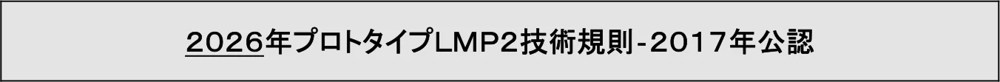
第１条 定義1.1「ル・マン」プロトタイプ２（“ＬＭ”Ｐ２）は、シャシーコンストラクターおよび／あるいはエンジン供給業者から独立したチームのみに向けたクローズドの車両である。1.2価格（Price）
新しいコンプリートカーで、単一のエンジンも公認された電子機器も除いた販売価格は、５３３,３０９.２８ユーロ以下でなければならない。従って、上記価格の範囲外で認められる唯一のオプションは：・エアコン装置（義務付けおよび公認されたもの）この装置の最大価格は７,７２９.１２ユーロ。・任意のリアビューカメラシステム（ただし公認されたもの）・ 任意のテレメトリーシステム・ 任意のＴＰＭＳシステム
シャシーコンストラクターはＦＩＡにスペアパーツの価格リストを提供しなければならない。この価格リストの総計額は、新しいコンプリートカーの販売価格の１４ ０％を超えてはならない。シャシーコンストラクターがレースにて販売サービスを提供するのであれば、スペアパーツの価格を２０％増額することが認められる。シャシーコンストラクターは、合理的な時間内で、会社の指示に従い、毎年少なくとも１０台を販売できなければならない。適用できる為替レートは、毎年１月１日付けで欧州中央銀行が発表した公式為替レートである。為替レートの差異（実際のレートとその年の１月１日に発表されたレート）が連続する１５日について１０％を超える場合、その通貨について新たな為替レートが発表される。
販売拒否あるいは決められた価格が遵守されていない場合、ＦＩＡ／ＡＣＯによって罰則が課される。1.3公認書式（Homologation Form）プロトタイプ“ＬＭ”Ｐ２車両は、シャシーコンストラクターによって記入された公認書式に合致し、適合査察が実施された後に「公認グループ」によって承認されること。付則Ｈ「公認」を参照。
P.41.4機械的構成部品（Mechanical components）推進、懸架、操舵および制動に必要なすべての要素に加えて、可動であるか否かに関わらず、それらの正常な作動に必要なすべての補機類。1.5主要構造体／シャシー（Main structure / Chassis）すべてのサスペンションおよび／またはバネの荷重が伝達される、シャシーの最先端サスペンション取り付け点からシャシーの最後端サスペンション取り付け点まで、前後方向に伸張する車両の構造体の完全な懸架部品。機械的構成要素は、完全または一部分が荷重を受けるものであっても、主要構造体の一部とはならない。1.6サスペンションアーム（Suspension arms）アップライトからシャシー／ギアボックスへ負荷を伝達するものを含め、懸架部分から非懸架部分へのすべての連結部。1.7ボディワーク（Bodywork）エンジン、駆動系、および走行装置の機械的な機能に関わる部品を除き、外気にさらされ、完全に懸架されているすべての車両の部分に関わるボディワークを言う。1.8エアインテーク（Air intakes）エアインテークはボディワークの一部と見なされる。1.9重量（Weight）プラクティスセッションの間に利用される重量計測手順を除き、ドライバーと燃料を一切除いた車両の重量を言う。1.10 コクピット（Cockpit）ドライバーおよび乗員を収容する車両の内部構造容積。コクピットとは、車両の頂点、床、ドア、サイドパネル部、ガラスがはめてある部分、前部および後部の隔壁によって限定されるシャシーの内部構造容積である。1.11 車両の銘柄（Automobile Make）
1.11.1 コンプリートカーに一致対応する自動車銘柄。1.11.2 シャシーおよび／あるいはボディワークのコンストラクター名がエンジン名と異なる場合は、常に前者が優先される。ボディワークのコンストラクター名は、シャシーコンストラクターの合意を得てのみ表示できる。
P.51.12 電子的制御（Electronically Controlled）1.12.1 半導体あるいは熱電子技術を利用した一切の命令システムあるいは過程。1.12.2 ドライバーが作動させ、１つまたは複数のシステムに作用する単純なオートマチックでないオープンループ電気スイッチは、電子制御とは見なされない。そのようなシステムも受動（パッシブ）と呼ばれる。1.13 クローズドループ電子制御システム（アクティブシステム）（Closed‐Loop Electronic Control System (Active System)）クローズドループ電子制御システムとは以下の条件を備えたシステムを言う：
・ 実際の値(制御変数)が連続的に監視される。・ "フィードバック" 信号が目標値（参照数値）と比較される。・ その比較結果に応じてシステムは自動的に調整される。このようなシステムも能動（アクティブ）と呼ばれる。1.14 パワートレイン（Power Train）ドライブシャフト自体は含まないドライブシャフトまでの、パワーユニットおよび関連のトルク伝達装置。1.15 エンジン（Engine）付属品を含む内燃エンジン、過給システムおよびその正常な機能に必要な作動システム。1.16 ギアボックス（Gearbox）
1.16.1ギアボックスとは、パワーユニットの出力シャフトからドライブシャフトへトルクを伝達する駆動ラインにあるすべての部品と定義される（ドライブシャフトは駆動トルクを懸架部分から非懸架部分へと伝達する構成部品と定義される）。 ギアボックスは、第一の目的がパワー伝達あるいはギアの機械的選択であるすべての構成部品、これらの構成部品に関連するベアリングおよびそれらを収容するケーシングを含む。1.16.2メインギアボックスのケーシングは、荷重をシャシーから受ける／へ伝えるあるいはギアボックスを構成する一部以外の機械要素から受ける／へ伝えるものである。1.17 ディファレンシャル（Differential）ディファレンシャルとは、２本のドライブシャフトが、３番目のシャフトによって駆動されている間に、異なる速度で回転させるために、同じドライブトレインの２つの異なるホイールにつながることを可能にするギアトレインと定義される。
P.61.18 補機回路（Auxiliary Circuit）
1.18.1補機回路（ネットワーク）は、信号合図、照明または交信のために、エンジンに使用される電気装置のあらゆる要素から構成される。
エンジンを操作するために利用される部品は、次のものであるが、それらに限られない：スロットル、点火装置、噴射装置、吸気装置、潤滑系、燃料供給および冷却装置。1.18.2補機バッテリーは、補機回路（ネットワーク）に電気エネルギーを供給する。1.19 シャシーアース（Chassis Ground）シャシー（車両およびボディワーク）アース（以下、シャシーアース）とは、シャシーと安全構造体を含んだボディワークの全ての伝導性の部品の電位（アース電位）のことである。1.20 総合サーキットブレーカー（"緊急停止スイッチ"）（General Circuit Breaker ("Emergency stop switch")）総合サーキットブレーカーは以下のために設計されたリレーである： － 補機用回路のすべての電気的伝達を遮断する－ エンジンを停止させる。－ トランスミッションの接続を切る総合サーキットブレーカーは、車両の内部あるいは外部からの最低１つの起動スイッチによって作動する。総合サーキットブレーカーは、ドライバーのマスタースイッチとして利用されてはならない。
1.21 ブロウン・ディフューザー（Blown diffuser）
原則的に排気流を利用しディフューザーのトンネルを力学的に達成することができる、あるいは端部を封鎖する意図のあるものとされる。どちらの場合もディフューザーの空力的挙動を改善することができることが期待される。
1.22 マスダンパー（Masse damper）
サスペンションの固有振動数を調整する唯一の目的で、バネ上の重さにあるホイールにリンクされた移動質量。1.23 イナーター（Inerter）サスペンションの固有振動数を調整する唯一の目的で、バネ上の重さにあるホイールにリンクされた回転質量。1.24 シグナルカラーの定義（Definition of Signal color）この色は、昼夜を問わず明瞭に見えなければならず、黄色／ライム／赤色が推奨され
P.7る。車両１台につき１色のみが、シグナルカラーを指定される部分に選択されることになっている。反射ステッカーの定義可能な限り高い輝度反射特性（例えば３Ｍ４０９０シリーズタイプ３／ダイヤモンドグレードのようなタイプ３、ＲＡ３）を有するものでなければならない。1.25 デカルト座標系（Cartesian coordinate system）1.25.1 座標原点Ｏを、前部車軸中心の垂直位置で基準面上に置き、Ｘ、ＹおよびＺの軸線は、矢印で示されるとおりの方向に進む３次元のデカルト座標系が使用されなければならない。1.25.2 Ｘ方向は基準面の後方へ、Ｙ方向は右側へ、Ｚ方向は上方へ向かう。
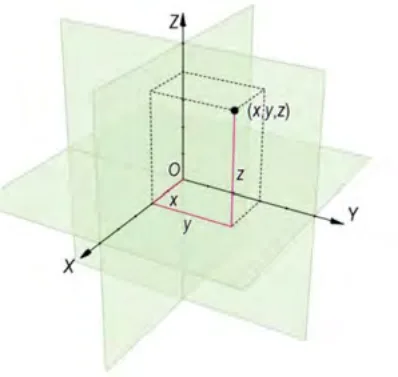
第２条 規則2.1基本原則2.1.1本規則が明確に認めていないことは禁止される。2.1.2車両はいかなる状況であっても、ドライバーのコントロール下になければならない。2.1.3シャシーコンストラクターは、セーフカーの製作について恒久的責任を負う。2.1.4規則の実施および解釈についてはフランス語版のみが有効とされる。2.1.5本規則の解釈については一切、耐久コミッティ―のみが責任を負う。2.2アクティブシステム2.2.1本規則に定めのない限り、またエンジン監視装置をのぞき、一切のアクティブシステムあるいは機能は禁止される：シャシーコントロール、オートマチックトランスミッション、ファイナルドライブ・ディファレンシャル装置、ショックアブソーバー、サスペンションまたは乗車高調整装置、４輪操舵など。
P.82.2.2エンジンにのみ作用するトラクションコントロール装置は認められる。2.3安全上の理由による改定安全上の理由による改定は､直ちに､予告なく実施される｡それにより発生する費用は、上限設定が義務付けられ、顧客の負担となる。2.4規則の遵守2.4.1 本規則に車両がその全体についてイベント期間を通じて常に合致していることを車検委員および競技審査委員会に納得させることは、各競技参加者の義務である。2.4.2 シャシーコンストラクターが新しい設計あるいはシステムを導入することを望む場合、あるいは本規則のいかなる部分であっても不明瞭に感じる場合、耐久コミッティにその解釈を求めることができる。解釈が一切の新しい設計あるいはシステムに関する場合、以下を連絡しなければならない：
－ 設計あるいはシステムの完全な記述－ 設計あるいはシステムの完全な機能に関する記述－ 適切な場合には図面あるいは略図－ 一切の提案された新設計が、車両のその他の部分に直ちに影響することに関してのシャシーコンストラクターの意見－ そのような一切の新設計あるいはシステムを使用することから発生する可能性のある長期的な成り行きあるいは新規開発に関するシャシーコンストラクターの意見－ シャシーコンストラクターが考える、その新設計あるいはシステムが車
両の性能を向上させる正確な方法（完全な性能報告書を含む）。2.5計測
すべての計測は、車両が平坦な水平面に静止した状態で行われなければならない。異なる仕様詳細が明瞭にされない限り、計測はこの水平計測面に対し、車両にホイールを装着した通常の状態で実施される。2.6材質車両のいかなる部品も４０GPa（ｇ/cm3）を上回る特定の弾性率を有する金属性材質で製作されていてはならない。規定への合致を確認するための試験がＦＩＡテスト手順03/03に従って実施される（付則Ｇ参照）。マグネシウムを基礎とした合金で製作される部品について： － ３ｍｍ未満の厚みのマグネシウムシートの使用は禁止される。
P.9－ 鋳造あるいは機械加工された部品は、壁の厚みが３ｍｍ以下であることは禁止
される。局所的な例外は認められる場合がある。
マグネシウムを基礎とした合金は、全競技参加者に非独占ベースで通常の商的条件にて入手可能でなければならない。ＩＳＯ１６２２０（合金鋳塊および鋳造部品について）およびＩＳＯ３１１６（鍛造部品について）によって扱われるこれらの合金で、ＦＩＡに承認されているもののみ使用できる。チタニウム製の部品の使用は、ＦＩＡ／ＡＣＯの合意を得て専用の制動部品に使用される場合を除き、禁止される。第３条 ボディワークおよび寸法
ＦＩＡは、車両が走行中に動きがあるとみられる（あるいはそのように疑われる）ボディワークのいかなる部分にも、負荷／偏向試験を実施する権利を留保する。チームはＦＩＡの指示に従い、パッドおよびアダプターを提供しなければならない。その他の基準の中で、ＦＩＡは弾性変形領域にわたって負荷／偏向曲線の線形性を検討する。一切の非線形性は塑性変形領域になければならない。特定の許容を除いて、各ボディワーク要素は不透明でなければならない。ボディワークのバリエーションは許されない。追加または削除できるボディワーク要素は、次のとおり： － 第３.６.２.ａ項に記載されている車両の前部にある2つのフラップ－ 許可されたガーニー（第３.６.２.ｅ項）。"ル・マン２４時間"の場合に限り、低ドラッグのキットが公認できる。3.1寸法内部および外部の測定（長さ、幅、オーバーハング、ホイールベース、ウインドスクリーン、ウインドウなど）およびボディワーク構成要素の全体的形状は、公認書式にある通りに維持されていなければならない。
3.1.1ホイールベース：自由。ただし公認書式に登録されたものと同一でなければならない。3.1.2全長：最大４７５０ｍｍ 3.1.3オーバーハングa/フロントオーバーハングは１０００ｍｍまでに制限される。b/リアオーバーハングは７５０ｍｍまでに制限される。3.1.4幅
P.10a/全幅：最大１９００ｍｍ b/最少幅：１８００ｍｍ（すべてのYZセクション上）、ただし、車両の最前部５０ｍｍを除く。3.1.5高さボディワークのいかなる部分も、基準面より上方１０５０ｍｍを超えてあってはならない（第３.５.１参照）。3.2ドア
3.2.1ドアは、第１６.６.１項に詳記される開口部を通じて、コクピットの通常の出入りを提供しなければならない。3.2.2開口（ヒンジ）あるいは施錠（ロック）装置は、緊急の場合に、コクピットの外部からと同様に内部からも、ドア全体が直ちに解放されるように機構設計されていなければならない。それらは公認されなければならない。開口（ヒンジ）あるいは施錠（ロック）装置は、シグナルカラーでマーキングされなければならない。3.3ウインドスクリーン＆ガラス部分
3.3.1ウインドスクリーン
ラミネートガラスあるいはポリカーボネート製（厚さ：最低３.５ｍｍ）あるいは公認グループにより承認された同等の素材製の、一体構造のウインドスクリーンが義務付けられる。ウインドスクリーンの上端部は： － 屋根の最高点より低くなければならない（エアインレットは除く）－ 最低３００ｍｍの幅に渡って基準面から少なくとも９５０ｍｍの高さに
なければならない（第３.５.１参照）。ウインドスクリーンは、マーシャルがＮｏ.４アレンキー（六角レンチ）を使用して取り除くことができなければならない。
3.3.2ガラス部分・ ポリカーボネート製のサイドウインドウ（最低肉厚２．０ｍｍ）が許される。・ 追加のフレームを取り付けることができるが、しっかりと取り付けられなければならず、第１６.７.３項に規定されるドライバーの視界を妨げてはならない。・ 追加の安全留め具が推奨される。・ コクピットから空気を引き出すための最小４０ｃｍ2の開口部（ルーバー）を、各サイドウインドウの後部に、あるいは各コクピット出入り口部に作らなければならない。コクピット内の温度を遵守するため、左右各１０ｃｍ2の最小開口部を維持し、
P.11部分的にこれらの開口部を塞ぐことが認められる。視界用テンプレート（テンプレート７および８）により定義される容積に中には、一切の開口部および／あるいはエアインテークは認められない。3.4ボディワークa/ 上から見て（第３.４.５項の必ず設けなければならないホイールアーチの切り抜きを除き）、また横と、前と後ろから見て（平面図）、ボディワークは、本規則で明確に許可されていない限り、機械構成部品が見えてはならない。b/ 車両走行中の可動のボディワーク部品／要素は、禁止される。この非可動性は、局所的に表面全体よりも低い剛性を有するよう設計された一切の領域が不在であることを含む。c/ 車両走行中に、自動的に、および／あるいはドライバーが制御し、空気流を変更する一切の装置は、本規定で明らかに許可されていない限り禁止される。d/ ブロウン・ディフューザーは禁止される。3.4.1 説明本条項は第３.４.５項に定める開口部には適用されない。a/側方から見て： a1/ 車軸中心線の高さより上で、一切の空間や切抜きのないボディワークが、コンプリートホイール（ホイールとタイヤ）の完全な周囲を覆っていなければならない。ホイールアーチは、外側から見て開放されるのみでなければならない。以下に位置する全領域は： － 前部車軸中心線の４１５ｍｍ後方の垂直な横方向面と後部車軸中心線の４１５ｍｍ前方の垂直な横方向面との間で－ 基準面から４００ｍｍの高さまでは、１つまたは複数のボディワーク要素により完全に覆われていなければならない。このボディワーク要素（含複数）のすべての見える部分は、ボディワークの全幅より１５０ｍｍを超えて内側にあってはならない（水平に測定）。a2/ リアロールオーバー構造体前面の前方で、リアビューミラーを除き、車両の前後方向の中心線の５００ｍｍを超えるボディワークのどの部分も、基準面より７００ｍｍを超えて上にあってはならない。リアロールオーバー構造の前面の後方で、リアウイングを除き、車両の前後方向の中心線の５００ｍｍを超えるボディワークのどの部分も、基準面より７２５ｍｍを超えて上にあってはならない。b/後方から見て：
P.12b1/ 機械的構成部品は車軸中心線を通過する水平面の上で見えてはならない。見える場合は、約１０ｍｍのワイヤーメッシュあるいはルーバーの装着が義務付けられる。リアのコンプリートホイールは、車軸中心線を通過する水平面の上で見えてはならない。それらは堅牢なボディワーク要素によって覆い隠されていなければならない（ワイヤーメッシュは禁止される）。これらの要素は、形状は自由であるが：
－ 厚さが一定でなければならない。－ それらの長さ全体にわたって、一定断面のYからの押出し（成形）により得られなければならない（固定を確実にするために端部を除く）－ イベント期間中を通じ、ボディワークに強力に固定されていなけれ
ばならない。
b2/ ボディワークの後部は、基準面に垂直な２枚の横方向プレートが取り付けられなければならない。それらは、
－ 第５図に従っていなければならない－ ボディワークの後端部になければならない－ 一部不浸透性の表面を有していなければならず、端部は最大５ｍｍ半径の湾曲を形成することができる－ イベント期間中を通じ、ボディワークに強力に固定されていなけれ
ばならない。
c/上から見て： c1/ フロントの両側の角は最小５０ｍｍの半径を有していなければならない。以下に位置する全領域：
－ 前部車軸中心線の後方４１５ｍｍの垂直な横方向横断面と、第１６.
６.１項に規定されるコクピット開口部の前端部との間、－ ボディワーク全幅から３００ｍｍを差し引いたものと同等な最低幅
に渡って車両の前後中心線に左右対称に配される部分は、１つまたは複数のボディワーク要素により完全に覆われていなければならない。このうち見えるすべての部分あるいはこれらの要素は、基準面から少なくとも２００ｍｍの高さになければならない（第３.５.１項参照）。c2/ 次によって画定される容積内：
・ 車両の前輪郭の後方・ 前部車軸中心線の前方・ 基準面のｚ+１５０ｍｍ上方・ 車両のすべての幅上車両の上から見えるすべてのボディワーク表面（上面図）は、切れ目、開口部、溝あるいは切り抜きのない連続した表面を形成していなければならない。この容積の中で、上から見えるすべてのボディワーク表面は１つのみの前端を有し、後端があってはならない。上記の規則の唯一の例外は：
P.13・ ホイールアーチの前に、片側に２つの空力要素（第３．６．２a項）・ スプリッターピラーこの容積内に唯一認められる開口部は：・ 義務付けられたホイールアーチ切り抜き部（第３．４．５項）・ ブレーキのためのエアインテーク（導管あるいはスクープに供給する
ためのみ）・ コクピット換気のためのエアインテークc3/ 以下に位置する全領域：
－ コクピット開口部の前端と後部車軸中心線の前方４１５ｍｍの垂直な横方向横断面との間－ ボディワーク全幅から３００ｍｍを差し引いたものと同等な最低幅
に渡って、車両の前後中心線に左右対称に配される部分は、１つまたは複数のボディワーク要素により完全に覆われていなければならない。このうち見えるすべての部分あるいはこれらの要素は、基準面から少なくとも４００ｍｍの高さになければならない（第３.５.１項参照）。c4/ 以下に位置する全領域：
－ 前部車軸中心線の後方１２００ｍｍの垂直な横方向横断面と車両の後端との間－ ボディワーク全幅から３００ｍｍを差し引いたものと同等な最低幅に渡って、車両の前後中心線に左右対称に配される部分では、このボディワークのすべての見える部分は、切り抜き部のない連続した一体の表面を形成していなければならない。許される唯一の開口部は： － エンジンの空気取り入れ口（第３.４.３ｃ項参照）－ コクピット冷却用出口－ ブレーキの空気取り入れ口－ 第３.４.３ｃ項に従う２つの追加のエアインテークで、その機能とし
て唯一、熱交換器の機械的要素を冷却することが認められるもの。これ以外の開口部が必要な場合、それらはボディワークの表面から突出してはならない。“ｎａｃａ”タイプのエアダクト、あるいはルーバーかワイヤーメッシュで覆われた出口のみが認められる。c5/ リアホイールの後方では、上からおよび横から見えるすべてのボディワークは、基準面の少なくとも２００ｍｍ上方まで下げられていなければならず、コンプリートホイール（ホイールとタイヤ）の全外周を覆っていなければならならい。車両の後部では、第３.４.５項に従う開口部を除き、後ろからのみ見えるボディワークすべてが、上記第３.４.１.ｂ項に合致していなければならない。リアホイール中心線後方および基準面より２００ｍｍを超えて上方にあるすべてのボディワークは、切れ目のない、滑らかな、連続した一体の表面を形成していなければならず、リアウイングを取り外して、車両上方から見える状態でなければならない。基準面上方６９０ｍｍ未満にある垂直面は、それらの上端全体が上方から見える限り認められる。
P.143.4.2クイックリリース固定具は外側から見え、明確に示される（赤い矢印あるいはその他の対照的な色による）。3.4.3給油カップリングシステムの近くにあるボディワーク接合部は、エンジン室あるいはコクピットへ漏れが一切生じないように設計されていなければならない。給油カップリングの外部部品は外側から見えてかまわない。
3.4.4空気取り入れ口
a/空気取り入れ口は、上記３.４.１項に合致していなければならない。b/それらは上から見てボディワークの周囲から突出してはならない。c/それらは、ボディワークの表面から５０ｍｍを超えて突出してはならない（エンジンの空気取り入れ口については１００ｍｍ）。－ 測定は、空気取り入れ口の最も高い点から水平位置にあるボディワー
ク要素まで垂直下方向に、少なくとも幅１００ｍｍに渡り実施される。d/ボディワークの頂部に配置される場合は、エリアはウインドスクリーン、サイドウインドウおよびドア開口部の最後端点に接する垂直な横方向面の上部線により画定され、空気取り入れ口（含複数）はウインドスクリーンの最高点の後ろに配置されなければならない。e/ エンジン冷却：エンジンの冷却を調整するには、ラジエーターの前で部分的または完全に接着テープおよび／あるいは平らな剛性プレートで塞ぐことが認められる。このブランキングはラジエーターの近くで直接行うこと。ボディワークを変更することは認められない。f/ブレーキ冷却：ブレーキ冷却を調整するために、ブレーキ冷却ダクトの入り口の一部または全部を、接着テープおよび/または平らな剛性プレートで塞ぐことが認められる3.4.5エアエクストラクター（空気排出口）エアエクストラクターは上記第３.４.１項に合致しなければならない。エンジン冷却：エンジンの冷却を調整するには、ラジエーターの前で部分的または完全に接着テープおよび／あるいは平らな剛性プレートで塞ぐことが認められる。このブランキングはラジエーターの近くで直接行うこと。ボディワークを変更することは認められない。
3.4.6義務付けられるホイールアーチ切り抜き部前後のホイールアーチに切り抜きを作ることが義務付けられる。
P.15a/フロントホイール各ホイールの上側に１箇所の切り抜きが義務付けられる。上から見て、その切り抜きは以下のようでなければならない： － 長さ測定値４３５ ０／＋５ｍｍ － 幅測定値３３５ ０／＋５ｍｍ － ホイール軸が切り抜き部の中心を通過するようにする。－ 切り抜きの長さに渡って、ボディワークの外側端部から３０ ０／＋ ５ｍｍの一定距離に位置すること。最大１０ｍｍの接続半径は、切り抜きの４つの角度に認められる。この切り抜きは、テンプレートの４つの角度で接続半径が１１ｍｍの４３ ５×２３５ｍｍの長方形テンプレートの導入ができなければならない（テンプレート９＿前部図面１０を参照）このテンプレートは、切り抜きの内側頂部から導入され、ホイールテンプレート（テンプレート１１－第１０図）と関連して使用されなければならない。この最後の１つがホイールアーチの内側に導入され（前からは見えないように）、軸を水平に保ったまま最大限上に押された後、切り抜きテンプレート９の円筒形底面の完全な支持を提供していなければならない。この位置でホイールアーチ切り抜きテンプレートの頂部表面は、水平であり、前、両側、および後部の開口部を囲うすべての方向からから完全に見えなければならない。サスペンションの部品および機械的要素は、頂部から見た時にのみ、切り抜きを通じて見えることが認められる。b/リアホイール各ホイールの上側に１箇所の切り抜きが義務付けられる。上から見て、その切り抜きは以下のようでなければならない： － 長さ測定値５３０ ０／＋５ｍｍ － 幅測定値１９０ ０／＋５ｍｍ － ホイール軸が切り抜き部の中心を通過するようにする。－ 後端部はホイール軸と平行－ 切り抜きの長さに渡って、ボディワークの外側端部から５０ ０／＋ ５ｍｍの一定距離に位置すること。最大１０ｍｍの接続半径は、切り抜きの４つの角度に認められる。＊前および後ろから見て、タイヤの上部が見えていてよい。この切り抜きは、テンプレートの４つの角度で接続半径が１１ｍｍの５３ ０×１９０ｍｍの長方形テンプレートの導入ができなければならない（テンプレート９＿後部図面１０を参照）このテンプレートは、切り抜きの内側頂部から導入され、ホイールテンプレート（テンプレート１１－第１０図）と関連して使用されなければならない。この最後の１つがホイールアーチの内側に導入され（前からは見えないように）、軸を水平に保ったまま最大限上に押された後、切り抜きテンプレート９の円筒形底面の完全な支持を提供していなければならない。この位置でホイールアーチ切り抜きテンプレートの頂部表面は、水平であり、前、両側、および後部の開口部を囲うすべての方向からから完全に見えなければならない。
P.16後部車軸の１０００ｍｍ前方から車両の後部まで、車両中心線から５００ ｍｍを超えるボディワーク部分は、リアウイングのエンドプレートとリアウイング要素を除き、基準面から７２５ｍｍを超えて高くすることはできない。3.5車両底面前部車軸中心線の後方でスキッドブロックを除き（第３.５.６項参照）、完全に懸架された部品は、以下に定義される通りの、基準面、リアディフューザーおよび側方部品（湾曲した側部を含む）を超えて突出してはならない。許される開口部は唯一、ホイールとサスペンション部品の動き（サスペンション動程およびステアリング）、エアジャッキのための穴、閉鎖ハッチ（メンテナンス作業用）およびオーバーフロー燃料パイプに必要な最小の隙間である。
3.5.1基準面車両の下部に、平坦な、連続的で、堅牢な第１図に合致する基準面が義務付けられる。基準面の下側は、コンプリート車両のすべての垂直方向の高さ計測の検査基準となる。a/サバイバルセルに特有のすべての垂直寸法について、サバイバルセルの底面と一体化する平行な表面部分は、最小７００ｍｍ（前後方向）×８００ ｍｍ（横方向）の寸法の長方形を有し、特有の基準として使用されなければならない。b/リアディフューザーとその垂直パネル（第３.５.２項参照）、さらに側方部品（第３.５.３項参照）と共通する端部は、最大１０ｍｍの半径で湾曲させることができる。ｙ１８０と前端の側部との間にある基準面の前方端部は最大５０ｍｍの半径で上方向に丸みを帯びることができる（図１のエリア１参照）。c/基準面は、上方から見て見えてはならない。基準面の上側に続くボディワーク要素は、基準面の一部とみなされる。
3.5.2リアディフューザー車両の後部下側に、１枚の平坦な、連続的で、堅牢な傾斜面（リアディフューザー）が義務付けられる。a/それは基準面に対して傾斜していなければならず、第１図に規定される最大容量（寸法および幾何学的形状）に合致していなければならない。b/リアディフューザーのいかなる部分も、基準面上方２００ｍｍを超えてはならず、後端部はボディワークの縁に対して垂直でなければならない（リアウイングを取り外して）。c/リアディフューザーを側方部品につなげている側面パネルは、垂直でなければならない。加えて、後部車軸中心線からディフューザーの最後端部ま
P.17で、それらは、車両の前後方向中心線に平行を保っていなければならない。d/リアディフューザーを垂直パネルにつなげるため、最大半径１０ｍｍが認められる。e/最大２枚の垂直整流板をリアディフューザーに追加することが認められるが、それらの表面は：・ ディフューザーに対して垂直でなければならない・ 平坦で、互いに平行であり、前後方向の車両中心線に対しても平行でなければならない・ 車両の前後方向中心線に対して左右対称に配されなければならない。・ それらの全体の長さでディフューザーに取り付けられていなければ
ならない。f/ディフューザーの後端部および上記第３.４.１ｂ2項に規定される２枚の横方向プレートは、同一の横方向面になければならない。
3.5.3側方部品
これらは基準面（第３.５.１項参照）およびリアディフューザー（第３.５.２項参照）の左右両側にある部品である。前部車軸中心線の後方で、それらは第１図に従い、基準面に対して傾斜面を形成していなければならない。エリア１および３内でボディワークとつなげる：ボディワークのその他の部品とつなげるために、側方部品は５０±１ｍｍの半径で上向きにのみ湾曲させること横から見て、車両のいかなる部分もこの５０±１ｍｍの半径を超えて伸長させることはできない。エリア１にて、フロントタイヤとの干渉問題を避けるため、１５ｍｍから５０ ｍｍの接続半径をY方向に最大２６０ｍｍの長さにつけることが容認される。この接続半径はフロントホイール軸の４００ｍｍ後方より開始されること。エリア２内でボディワークとつなげる：ボディワークのその他の部品とつなげるために、側方部品は５０+/-１ｍｍの半径で上向きにのみ車両の全幅まで湾曲させることができる。
3.5.4前部部品
a1/ 以下に位置する領域：
・ 前部車軸中心線の前方・ 最低幅１,０００ｍｍを超える部分の車両の懸架部品はすべて、基準表面の上方５０ｍｍを超えて配置されなければならない。a2/ 以下に位置する領域：
・ 車両の前部輪郭の後方
P.18・ 前部車軸中心線の４００ｍｍ前方・ ボディワークの全幅までの部分のボディワークの下側から見える部品はすべて：・ 開口部、溝あるいは切り抜き部のない連続した表面を形成しなければ
ならない。・ 第３.５.４.b項の硬さの基準を満たしていなければならない。a3/ 以下により確定される容積内：
・ 車両の前部輪郭の後方・ 前部車軸中心線の前方・ 車両の中心線の両側８５０ｍｍ・ 基準面から下へＺ＋２００ｍｍのところのボディワークの下側から見えるボディワーク表面はすべて切り込み、開口部、溝、切り抜き部、囲い、小翼、ターニングベイン、ウイングプロフィールのない連続した表面を形成していなければならない。非連続的である例外は唯一、スプリッター後縁である（第３.６.１項に記述）。この容積の中では、平面Y=csteを伴う、下側から見えるボディワーク表面のいかなる部分も１つのみの前端を、また最大で１つの後端を有していなければならない。この容積の中では、平面X=csteを伴う、下側から見えるボディワーク表面のいかなる部分も左右それぞれ１つのみの端部を有していなければならない。スプリッターの下側から見える表面上で、直径３０ｍｍの球形は、この表面の上方および下方（金型面）から単一の接触を形成しなければならない。a4/ 次のように定義される2つの左右対称の容積内では：
・ 前部車軸中心線・ 前部車軸中心線の４００ｍｍ後方・ 車両中心線の各側１８０ｍｍから９５０ｍｍ・ 基準面からＺ＋１００ｍｍ以下ボディワークの下側から見えるボディワーク表面はすべて切り込み、開口部、溝、切り抜き部、囲い、小翼、ターニングベイン、ウイングプロフィールのない連続した表面を形成していなければならない。この容積の中では、平面Y=csteを伴う、下側から見えるボディワーク表面のいかなる部分も１つのみの前端を有し、後端は有していてはならない。下側から見える表面上で、直径３０ｍｍの球形は、この表面の上方および下方（金型面）から単一の接触を形成しなければならない。但し、基準面と側方部品の接点を除く（第３.５.１.ｂ項に記載の通り、そこについては２０ｍｍの球形が使用される）。b/第３条５項４ａに示されるボディワーク要素のどの点も、次に示される以下の垂直負荷の組み合わせがかけられた時に、垂直方向に１５ｍｍを超えて偏向することはできない。主要負荷が垂直下方向に、当該部品の底部表面に構造的に組み込まれた到達可能な８Ｍ５インサートによってかけられる。これらのインサートの場所は、当該部品の公認の中で報告される。これらのインサートの基本的要件は：
P.19・ 車両の前後方向の垂直面に対して左右対称に配置されなければならない。・ 後端部から１００ｍｍのところに位置する４つの１列とし、２つの側部のインサートは最大幅から１００ｍｍに位置し、残りの２つは４つすべてが等距離になるよう配置される。・ 前端部から１００ｍｍのところに位置する４つの１列とし、２つの側
部のインサートはスプリッター形状の前半径上にあり、残りの２つは４つすべてが等距離になるよう配置される。c/各ホイールについて、以下に画定される容積の内側でのみ、ブレーキディスクの内側面に沿って冷却する空気を導くために、単純なブレーキフランジが許される：・ ブレーキディスクの内側摩擦面によって決められる面（新しい場合）・ ブレーキディスクの内側摩擦面平行な面を車両内側へ４０ｍｍオフセ
ットした面（新しい場合）・ リムの内径。上記に画定される容積の外側で（ブレーキフランジ）、ブレーキダクトおよび冷却ホースは、ブレーキディスクとキャリパーに空気を流す冷却のみを目的とし、車両の空力性能への寄与は伴わない。従ってパイプは単純な形状で、空力的プロファイル、囲いあるいは小翼がそれらに取り付けられないこと。それらはリムの内側の容積内も満たさないこと。ホース/ダクトの数は制限されていないが、それらの合計断面積はホイールごとに１５０ｃｍ2を超えないこと。ホースまたはダクトは、スプリッター後縁の上面から４０ｍｍ未満であってはならない。
3.5.5地上高
a/サスペンションを除き、地上高を変更するように設計された一切のシステムは認められない（下記第１２.３項参照）。b/車両の懸架部分は基準面によって形成される面より下には認められない。ただし下記の義務付けられるブロックは除く： c/フリクションブロックは、それらの表面が、取り付けられている主要部分と連続的である場合に許可される。最大比重が２の均質な材質で製作されていなければならない。フリクションブロックは、車両の中心線に左右対称に、取り付け表面とブロックの間に一切の空気が通過しないような方法で取り付けられなければならない。下側から見て、スプリッターにフリクションブロックを固定するために使用されている留め具は：
・ ＬＨＳおよびＲＨＳ（左右）を組み合わせた合計領域が４０ｃｍ2を超えてはならない。・ ２ｃｍ2を超えない個々の領域を有していなければならない。・ それらの下側表面全体が車両の下から見え、新しい場合はフリクショ
P.20ンブロックの下側表面から最小２ｍｍ奥まっているように取り付けられていなければならない。
3.5.6スキッドブロック
基準面の下に、１つの長方形のブロック（スキッドブロック）を取り付けなければならない。それは最大４つの部分で構成できる。a/スキッドブロックは：
・ 前部車軸中心線から後部車軸中心線まで前後方向に伸張していなければならない・ 第２図に合致していなければならない。スキッドブロックは、レースのスタート前に検査される。・ 許される最大の磨耗は５ｍｍである。その測定は、プラクティスセッションとレースの終了後に、第２図に明記される領域で実施される。・ 以下を除き、一切の穴、切り抜きあるいは外側表面のポケットがあってはならない： － 第３.５.６ｃ項にて許されている留め具を取り付けるのに必要なもの－ 車両を持ち上げるエアジャッキに必要となる可能性のあるもの。・ 各部分は比重が１.３～１.４５の均一な素材でできていなければならない。・ ブロックと基準面との間に空気が一切通過することのないような方
法で、車両中心線の左右対称に取り付けられなければならない。
b/スキッドブロックの前後端部は前後方向に最大２００ｍｍの長さに渡り、２１ｍｍの深さに面取りをすることができる。c/留め具下から見て、スキッドブロックを基準面に固定する留め具は：・総面積が４００ｃｍ２を超えてはならない・個々の面積は２０ｃｍ２を超えてはならない・スキッドブロックがブロックの全体の低部表面が車両の下側から見え、基準面の下１９ｍｍ未満となるように、取り付けられていなければならない。d/スキッドブロックの前部は、２５００Ｎの負荷がフリクション表面のどの点にも垂直にかけられた場合に、５ｍｍを超えて歪んではならない（第２図比較参照）。負荷は直径５０ｍｍのラムを使用して、上方向へかけられる。基準表面上のボディワーク前部とサバイバルセルとの間にある支柱あるいは構造物を、試験のいかなる部分の最中であっても非線形の歪みを認めるシステムあるいは機構を有していないこと、あるいは負荷がはずされた時に歪み／負荷の全単射を防ぐことを条件に（速度指示５ｍｍ／秒）、この試験に提示できる。スキッドブロックの前部は、フロントホイールを地面から吊り上げること
P.21のできる力が車両前後方向中心線に加わった時に、１０ｍｍ以上垂直に歪んではならない。e/スキッドブロックの後部は、５０００Ｎの負荷がフリクション表面のいずれかの点に垂直にかけられた場合に、５ｍｍを超えて歪んではならない(第２図比較参照）。負荷は直径５０ｍｍのラムを使用して、上方向へかけられる。スキッドブロックと車両の構造体部分との間にある支柱あるいは構造物を、試験のいかなる部分の最中であっても非線形の歪みを認めるシステムあるいは機構を有していないこと、あるいは負荷がはずされた時に歪み/負荷の全単射を防ぐことを条件に（速度指示５ｍｍ／秒）、この試験に提示できる。3.6空力装置
3.6.1ウイングプロフィール以下を除き・ 第３.６.３項に規定されるリアウイング・ 下側から見て、第３.５.４.ａ項に規定される通りの連続的な表面を形成しなければならないボディワークのすべての見える部分ウイングプロフィール(*)を持つボディワークあるいはボディワーク底部の要素は認められない。(*) ウイングプロフィール：前部の前端と後部の後端をつなぐ異なる曲線および/あるいは中央の２つの弧により形成される１つまたは複数の部品で作られる区間で、その目的が空力的揚力あるいはダウンフォースを発生させようとするもの。ウイングプロフィールとはみなされないボディワーク構成要素は：
・ 一定の肉厚であるもの（部品の端部は１つのみの素材の厚みについては肉厚を減らすことができる）・ 完全に左右対称のプロフィールであるもの。これらのプロフィールは後端部を超えてプロフィール伸張部があってはならず（この後端部より２ ５ｍｍ以内には、一切のボディワーク要素が認められない）、後端部は以下でなければならない： － プロフィールの最大の長さの３％に等しい最低肉厚を有するが、１０ ｍｍ以上であること－ プロフィールの中心線に垂直であること。・ 最低３０ｍｍの後端部（物理的なあるいは実質的な）を有するもの。前端
部を除き、プロフィールの厚さが、要素の全体表面に渡り後端部の厚さを超えていなければならない。・ 垂直であるもの（前方から見て）
3.6.2ボディワークに追加される空力要素以下を除き、ボディワークの一体部分としても、そうでなくとも、ボディワークに空力要素を追加することはできない： a/フロントフェンダーの前および前部投影面の範囲内で、片側に最大２つ
P.22の空力要素（ダイブプレーン）が以下の条件で認められる：・ ドライバーの視界を妨げない・ 前照灯を覆わない・ 基準面の上方６００ｍｍを超えて位置していない・ 上から見て、前部の外側の角が最低５０ｍｍの半径を有している・ 前部の厚みの半分の半径で湾曲された端部を有している・ シャシーコンストラクターによって承認されており、車両の公認書式
に記載されている。「ダイブプレーン」とは、公認されたボディワーク部品の外側表面より３ ｍｍを越えて突出している連続した１つの表面と定義される。この連続した表面を通じ、Ｘの任意の断面に渡って、どのＹ値においても、１つのみのＺ値がある。すべての表面は６ｍｍを越えることのできない均一の厚みを有していなければならない。この表現は通常「フィッシュプレート」を禁じるものである。b/フロントホイール軸の前方で、ボディワークの下側に追加することができ、車両の前後方向中心線に対して左右対称でなければならない垂直整流板は、Ｙ８５０の外側でのみ認められる。c/ボディワーク後部に１枚の「ガーニー」最後部のエンジンカバー要素は、１００Ｎの負荷がかけられた時に５ｍ ｍ以下の垂直方向の偏向が許される。負荷はガーニー、あるいは後端部に沿ってどの点にでもかけることができる。これらの負荷は、適切な１５ｍｍ幅のアダプターを使用してかけられ、そのアダプターは当該チームが供給しなければならない。注：上記のすべての負荷／偏向試験は、エンジンカバーを車両に取り付けた状態で行われなければならない。負荷／偏向比は、負荷は最大２００Ｎまで、偏向は最大１０ｍｍまで一定したものでなければならない。d/第３.６.３項に規定されるリアウイングe/以下はボディワークに追加された空力要素とみなされる：・ ボディワークの一体部分であるかないかを問わず、規定で認められていないアングルブラケットアングルブラケット（またはガーニー）とは、ボディワークの後端（あるいは閉鎖）部で、角度のついた１つの材質、あるいは空力要素と定義される。小さな角度やその他のプロフィールを利用して、アングルブラケットの空力衝撃を模倣することを試みる一切の装置も、ガーニーとみなされる。ガーニーの定義の例として、それに限られることはないが・ ガーニーの局所的後端の接平面と局所的後端の前方１００ｍｍの領
P.23域に（ｘ軸で）沿うボディワークの接平面とで形成される角度が４５度から１３５度の間の場合・ ガーニーの局所的後端の領域に沿うボディワークの接平面と基準面とで形成される角度が４５度から１３５度の間の場合例外として、以下にガーニーを取り付けることが認められる：・ コンプリートボディワークの最後尾の後端・ 第３条６項３で定義される最後尾のリアウイング要素の後端・ 第３条５項４で定義されるフロントウイングとフラップの後端認められる場合には、１後端部につき１つのガーニーのみが認められる。上記に記載されるガーニーはボディワークあるいはボディワークに取り付けられている装置から離れておらず、ガーニーとボディワークあるいはウイングとの間に一切空気が通過できないこと。これらのガーニーの偏向は、以下に合致すること：・ ボディワークの後端のガーニーについては第３条６項２.ｃ・ リアウイングに付いたガーニーについては第３条６項３ｆ・ 空気排出口（チムニー）・ 配置可能箇所が１箇所を超えるボディワーク要素・ ダウンフォースを発生させるだけの機能をもつ、規則で認められてい
ない一切の空力要素。
3.6.3リアウイング
リアウイングは以下の要素で構成される：ウイング、垂直な支持具およびエンドプレートで、それらは以下の基準を満たしていなければならない： a/ウイングダウンフォース（反揚力）を発生させる第一要素は、単一の空力装置で、調整可能で、車両の後部に搭載され、最大で２つのウイングプロファイル（主ウイング部とフラップ部）を有する。それは、以下の通りでなければならない： a1/ 水平に３００ｍｍ×垂直に１５０ｍｍ×横方向に１８００ｍｍの容積に収まること。a2/ 主要装置とフラップは、リアウイングの長さ全体にわたり、それぞれ一定の区画のYからの押し出し（成形）によって得られなければならない。主要装置とフラップとを接続し、それらの支持体を補強することを唯一の目的として、Y方向に単純に押し出された一定区間を加えることが許される。a3/ 最後尾プロフィールの上部面上のガーニーは、それがリアウイングプロフィールが収まる３００ｍｍ×１５０ｍｍ×１８００ｍｍの容積内に留まることを条件に、容認される。これは第３条６項３a4の規定を満たしていなければならない。
P.24a4/ ウイングのどの部分も、基準面の上方９６５ｍｍを超えないように取り付けされること。a5/ コクピットの中から調整することができないこと。a6/ 主ウイングの後端部は、２００Ｎの２つの負荷が垂直に、また左右対称に
かけられた場合に、３ｍｍをこえて歪みを生じてはならない。この負荷は、ウイングの幅に渡りいずれの左右対称点へ、その要素の後端と一致してかけられる。負荷は以下の通りの競技参加者により供給されるアダプターを使用してかけられる： － 幅は５０ｍｍ以下である－ 後端より前方への伸張は１０ｍｍ以下

b/垂直支持体b1/ フィンと連続的になっていない場合、長さは、水平方向に最大４００ｍｍに制限される。b2/ 支持体は最大で１２５０ｍｍ離れていなければならない。支持体を１つとするために、組み合わされている場合、第３.６.４項のすべての点を満たすものでなければならない。b3/ 表面は平坦で、車両の縦方向の中心線に平行でなければならない。b4/ 前端は丸みを帯び（一定の半径で）、後端（後部の縁）は２０ｍｍ以内で傾斜することができる。c/リアウイングの取り付けリアウイングはシャシーあるいはトランスミッションケースまたは車両の後部衝撃吸収構造体に、堅牢に（堅牢な状態とは、取り付けに一切の自由度がない状態を言う）取り付けられていなければならない。リアウイング要素の局所的固定部は互いの間に一切の自由度がないこと。c1/ ボディワークとエンドプレートとの固定部を取り外した状態で、垂直支持体は、リアウイングの表面に均等にかけられる１０ｋＮの垂直負荷に耐えることができなければならない。c2/ ボディワークとエンドプレートの固定部とリアフラップを連結し（走行状態にあるように）、主平面および横方向プレートのどの点も（第３.４.
P.25１.b2項参照）、次の組み合わせられた垂直負荷がかけられた時に、垂直方向に１５ｍｍを超えて歪んではならない： a/ 主平面の表面に２４００Ｎの負荷がかけられる。負荷は、下方向へ均一に、また同時に、主平面の翼弦の長さの２５～ ７５％となるＸ点に、中心線について１６４ｍｍ、４５２ｍｍおよび７４０ｍｍの点に、ウイングの前端部からその後端部まで、あるいは存在する場合はフラップのオーバーレイの点まで伸張する、幅２００ ｍｍの区別のできる類似の６種のパッドを使用してかけられる。それらの最も上になる表面は、４００Ｎの負荷がかけられる前は水平でフラップの上部点の上方になる。b/ １０００Ｎの負荷が特定のフックあるいはアダプターを経由し、上部
水平角度の幅全体の上に置かれた横方向の各プレート（第３条４項１ ｂ2比較参照）に、その中央に位置させ、またプレートの後面の縦にかけられる。d/エンドプレートd1/ エンドプレートは２つの部分から成ってよい（１つはリアウイング上で、もう１つはボディワーク上）。リアウイング上に取り付けられる部分は、７６５ｍｍ×３５０ｍｍの長方形に納まらなければならず、最低面積は１０００ｃｍ２で水平方向に３ ００ｍｍ×垂直方向に１５０ｍｍの最低寸法を有していなければならない。d2/ それらは、上記第３.６.３.c2項を満たしていることを条件に、ボディワークに取り付けることができる。d3/ 厚さは一定で、最低１０ｍｍでなければならない。端部は一定の５ｍｍ半径で湾曲させなければならない。d4/ 表面は平坦で、車両の縦方向中心線を通る垂直面に平行であること。d5/ 上記で認められているボディワークへの固定部を除き、ボディワークの要素はエンドプレートに取り付けられてはならない。e/後端エアロフォイル要素（フラップ）最も後ろのウイング要素は、表面に２００Ｎの負荷がかけられた場合に、５ｍｍを超えて水平方向に、また１０ｍｍを超えて垂直方向に歪んではならない。負荷は後端要素の翼弦の長さの５０％にあたる地点に、フラップの頂点によって決められる平面に垂直な線に沿ってかけられなければならない。負荷は車両中心線にある点、および中心線の両側２７０ｍｍと５４０ｍ ｍの点についてもかけられなければならない。負荷をかける際には１５ｍｍ幅のアダプターを使用し、それは当該チームが提供しなければならない。
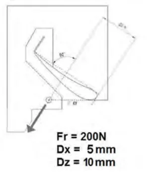
f/最も後ろのウイング要素は、その後端あるいはガーニーに２００Ｎの負荷がかけられた場合に、負荷のかけられた方向へ４ｍｍ以下偏向してもかまわない。負荷は均一かつ同時に後端あるいはガーニーに沿った任意の２点に、車両中心線に左右対称に加えられる。負荷のそれぞれは２００Nとする。負荷は翼弦の長さに平行にまた垂直にかけられる。適切なアダプターが当該チームにより供給されなければならない。接面は最大で３０ｍｍ（横方向）×５ｍｍ（ガーニーの頂点部）でなければならない。

g/一般注：上記のすべての負荷／たわみ試験は、車両にウイングをつけた状態で実施しなければならない。負荷/偏向レシオは、リアウイングの全体の機能範囲にわたって一定でなければならない。
3.6.4フィン
a/一般垂直な堅牢なフィンの取り付けが義務付けられる。このフィンは以下のようでなければならない： － 前後方向に、車両中心線に平行－ 中心線のどちら側も等しい厚さで、完璧に車両の縦軸上に位置する。このフィンは一定の厚さでなければならない（最低１０ｍｍ～最大２０ ｍｍ）車両にホイールを取り付けた状態で、フィンの目に見える部分は（側方から見て）、両側で３０００ｃｍ２を超えていなければならない。フィンは、一切の穴や開口部のない連続的な状態でなければならない。
P.27エンジンの空気取り入れ口をフィンと統合させることができるが、第３. ６.４項のすべての規定が遵守されていることを条件とする（肉厚については、最大１４００ｍｍの長さに渡って一定とすることはできない）。このフィンには、その他の装置を固定することはできない。フィンを、エンジンカバーに一体的に取り付けることおよび／あるいはシャシー、リアウイングおよび後部構造体（“ブリッジ”上）にしっかりと固定することができる。エンジンカバーおよび／あるいはフィンの取り外しに工具を使用することが必要であってよい。b/位置頂点端部は、まっすぐで、基準面の上方１０４０ｍｍと１０５０ｍｍの間になければならない。前端の横方向保護は、まっすぐで、ウインドスクリーンの上端部の最大１ ０ｍｍ後方に位置しなければならない。（第３.３項参照）頂点端部は、基準面から上方に１０００ｍｍ以下であることを条件に、前端部とウインドスクリーンの上端の１００ｍｍ後方の地点との間のゾーンでは、まっすぐでなくてもよい。ウインドスクリーンの上端は、Ｙ＝０で、ウインドスクリーンの最後端点Ｘ位置と定義される。後端はまっすぐで、後部車軸中心線の後方３５０ｍｍと４５０ｍｍの間に位置しなければならない（３５０ｍｍの寸法は、それがフィンを伸ばしている場合、リアウイング支持体にこれらの制約は適用されない）。底端部は、ボディワーク表面の上方２５ｍｍ以下でなければならない。c/ジオメトリー前端、頂端部、および底端部は、一定の半径で湾曲させることができる（半径はフィンの厚さの半分に等しくなければならない）。後端部は、傾斜しているか、２０ｍｍ以下の楕円形とすることができる。頂端／前端、頂端／後端、底端／前端および底端／後端の間は、最大５０ ｍｍの半径が認められる。フィンがエンジンカバーに取り付けられている場合、最大５０ｍｍ半径が両方の部品の間に認められる。d/たわみ試験長さ４００ｍｍの内部高６０ｍｍであらゆる内端部が最大半径５ｍｍのＵ字ツールを使用し、フィンの頂点端部において、静加重試験が適用される。Ｕ字ツールの中間は、どちらの端部もオーバーハングしないように、（最も後ろの位置が車両の後部車軸になるように）フィンの頂点端部に沿って、どこにでも置くことが出来る（横方向から見て融合した半径は無視される）。負荷は４００ｍｍのＵ字ツールの中心にかけられる。この試験は、元の場所にてフィンに２回実施することができ、それによりシャシー／ボディワークの取り付け部も試験することができる。それぞれの試験で、フィンのたわみは、１００ｄａＮの負荷で（どの点にても）１００ｍｍ以下であり、一切の恒久的変形は、負荷を１分間はずし
P.28た後で３ｍｍ未満でなければならない。3.7全体的偏向
原則として、Ｘ／Ｙ／Ｚいずれの方向においても、１００Ｎの（押す／引く）負荷がかけられた時に、ボディワークのいかなる部分も５ｍｍを超えて動かないこと。負荷をかける方法は、試験される部分の特有な形状によって決まり、保持方法はその部分に特有の圧力をかけない（その挙動に直接影響を与えることができる）。偏向はＺ＋方向（上向き）へは検査されない。負荷をかけている時に、その部分はそれでも技術規定を遵守していなければならない。（例としては、それに制限されることなく：アンダーボディーのフロントバージボードなど）。必要以上に試験実施がなされることになるいくつかの部分には例外が認められる。例としては、それに制限されることなく：リディフューザーの垂直フィン、ボディワークの頂点部の広範囲、などは公認過程で確認がなされる。ブラシがけ、ゴム製ブーツ、ゴム製封印は、ゴムを拾い上げるのを防ぐためにのみ受け入れられる（そのような装置は公認過程の間に提示されること）。第４条 重量4.1最低重量９３０ｋｇ車両はイベント全体を通して、常にこの最低重量に従っていなければならない。イベント期間中に交換された可能性のある一切の部品の重量検査は、車検員の裁量にて実施される。フロント/リアに掛けられる重量配分は公認され、ドライバーが乗車せず燃料も搭載の無い状態で遵守されていなければならない。±１％の公差が、申告された重量配分に認められる。4.2バラスト
・ バラストは、取り外しに工具が必要であるように、しっかりと固定されなければならず、その方法は車検員が封印を取り付けられるようでなければならない。・ 可動式のバラストシステムは一切禁止される。バラストの材質の密度は１４を超えることはできない。・ 車両は、＋２０ｋｇの重量バラストを受け入れることができるよう、設計されなければならない。バラストの位置は、公認された重量配分を守って決められること。・ コクピットに取り付けられるバラストは公認クラッシュ試験に提出されなければならない。・ バラストは前後のホイール軸の間に配置されなければならない。
バラストの位置はすべて公認されなければならない。4.3液体
重量は、タンクに液体が残った状態で、イベント期間中いつでも検査できるが、プ
P.29ラクティスセッションあるいはレースの終了後、車両は重量計測前にすべての燃料が抜き取られる。第５条 エンジン5.1仕様車両に使用されるエンジンは、ＦＩＡ／ＡＣＯが指定する単一のエンジンのみである。5.2一般条件
5.2.1すべての車両は、サバイバルセルに対してのギアボックス位置の相対的位置を変更することなく、６４０ｍｍの長さのエンジンを取り付けなければならない。5.2.2エンジンはエンジン供給業者により義務付けられ、「２０１７－２０２０ＬＭ Ｐ２エンジンマニュアル」および／あるいは適切な耐久コミッティの決定に記された制限の範囲内で使用されなければならない。5.3吸気温度5.3.1エンジンに供給される混合気（空気および／または燃料）および／あるいは吸入される空気の温度を下げる効果および／あるいは目的を有するすべての装置、システム、手段、構造もしくは設計は禁止される。
5.3.2内部および／あるいは外部的に水やその他いかなる物質を噴霧、または噴射したりすることは、エンジン内での燃焼を目的とする通常のものを除き禁止される。5.4インテークシステムエンジンのエアフィルターまでは自由5.5排気システム
5.5.1騒音レベル：予選および決勝レース中、各車両から出される音量は１１０ｄ ｂＡを上回ってはならない。計測は走路端部から１５ｍ離れた地点で行われる。5.5.2排気は単一エンジンの供給業者から発行された仕様に合致していなければならない。5.5.3サイレンサーは単一エンジンの供給業者により指定されたものでなければならない。5.5.4排気パイプ出口
P.30排気パイプの出口は： a/ホイールベースの中間地点より後方でなければならない。b/リアホイール軸の少なくとも４００ｍｍ前方になければならない。c/基準面より２５０ｍｍを超えて上方にあってはならない。d/車両の中心線に対して、少なくとも最終の１００ｍｍで、垂直に配向されていなければならない。e/上から見てボディワークの周縁に収まっていなければならない。第６条 配管および燃料タンク6.1燃料システム
6.1.1すべての燃料配管は、エンジンが稼働中あるいはスタート時にのみ作動しなければならない。供給ポンプの（タンクからコレクターに供給する）スイッチは、ピットストップの間に入れることができる。注：「スイッチを入れることができる」という文言はメインスイッチとは異なるスイッチへの人間による特定の行為が要求される（エンジンが止められたあるいはストールした時、燃料ポンプが止められた後に、燃料ポンプを再開するため）。6.1.2燃料装置は、下記の条項の規定が遵守されている限り、自由である。6.2燃料タンク（含複数）6.2.1車載の燃料容量は、７５リットルに制限される。6.2.2低圧側（高圧燃料ポンプの後ろ）の圧力は、１０barAに制限される。
6.2.4タンクは、防火壁によりコクピットおよび／あるいはエンジンルームから隔離されていなければならない。6.2.5燃料タンクはＦＩＡ／ＦＴ３ １９９９仕様に合致するか、またはそれを上回るラバーブラダーでなければならず、付則Ｊ項第２５３条１４項の規則に合致するものでなければならない。6.2.6タンクは少なくとも厚さ１０ｍｍの衝撃吸収構造体で囲われていなければならない。6.3燃料配管
6.3.1タンクの壁の一部であるすべての付属品（通気口、入口、出口、タンク給油
P.31口、タンク間の連結具およびアクセスホールを含む）は、金属製または複合素材製でなければならず、燃料タンクに接着されていなければならない。6.3.2燃料タンクとエンジンをつなぐ燃料配管は自動閉鎖分離バルブを備えなければならない。このバルブは、燃料タンクから燃料配管取付け具を引き抜いたり、破損するのに必要な負荷の半分以下の負荷で分離するものでなければならない。6.3.4燃料を収容する配管は、コクピットを通過してはならない。6.3.5配管は、いかなる漏れが生じようともコクピット内に液体が滞留しないように取り付けられなければならない。6.3.6配管は、それが柔軟なものである場合、カシメあるいは圧着式コネクターおよび摩擦と炎に耐え得る外部網材を有していなければならない。6.3.7低圧燃料配管は、１３５℃の最高作動温度での最低破裂圧力４１ｂａｒを有していなければならない。6.3.8高圧燃料配管は、最高作動温度１３５℃での最大作動圧力の２倍以上の最低破裂圧力を有していなければならない。6.4燃料タンク給油口
6.4.1車両は結合された燃料タンク給油口と通気口を備えなければならない。燃料タンク給油口は、車両の両側に取り付け可能でなければならない。
6.4.2車両の給油口および通気口はともにデッドマン機構の原理に合致した漏出防止ドライブレークカップリングを備えなければならず、開放状態の時にいかなる保持装置も組み込んではならない。6.4.3カップリングの寸法：付則Ｊ項第２５２－５Ｂ図6.4.4車両にカップリングが接続されている時に、ＩＣＥおよび一切の動力供給電気モーターが始動することを禁止するため、少なくとも１つの近接センサーが義務付けられる。6.5タンク給油口、通気口およびキャップ
6.5.1 それらは事故の際に破損しないような場所に取り付けられなければならない。6.5.2ボディワーク表面より突き出してはならない。6.5.3基準面を通って出口をもつオーバーフローパイプが認められる。6.6ブリーザーパイプタンクを外気とつなぐブリーザーパイプはボディワークの外側に出口がなければな
P.32らない。燃料セル換気システムには以下の要素が含まれていなければならない： － １つの重力式ロールオーバーバルブ－ １つのフロートチャンバー換気バルブ－ ２００ｍｂａｒの最大過圧を有する１つのブローオフバルブこれらはフロート室換気バルブが閉じているときに作動しなければならない。6.7レース中の給油
6.7.1下記付則Ａ：給油を参照
6.7.2常に、（車両ゼッケンのついた）給油装置および車両のタンクは、外気温度および大気圧に保持されていなければならない。6.7.3車両内で直ぐに使用するための燃料は大気温度よりも１０℃を超えて低くてはならない。規則の準拠を確認する際に、大気温度とは、ＦＩＡ指名の天気予報提供業者が、一切のプラクティスセッションの１時間前あるいはレースの２時間前に記録した温度とする。レース中は、その数値は２時間ごとに更新される。この情報は公式計時モニターにも表示される。6.7.4車載燃料の総容量を増加させる目的および／または効果を有するいかなるシステムまたは装置も禁止される。6.7.5重力に厳密につながっていない原則を持つ一切の装置あるいはシステムは車載が禁止される。6.7.6競技参加者は、イベント期間中いつでも車両から１.０リットルの燃料サンプルを採取できるようにしなければならない。第７条 オイルシステム7.1 規定以下の規定が遵守されなければならない： 7.2オイルタンク（含複数）7.2.1オイルタンクが前部車軸中心線の前方あるいは後部車軸中心線の後方に取り付けられている場合、最低でも１０ｍｍの厚さの衝撃吸収構造体で保護されなければならない。7.2.2オイルタンクの外壁は、車両の前後方向中心線から６００ｍｍを超えることはできない。7.2.3潤滑油を収容するタンクあるいはパイプは以下の場所には認められない：
P.33・ コクピット内。・ ギアボックスの後方。・ 車両中心線から横方向に８５０ｍｍを超える。7.3オイル配管7.3.1低圧潤滑油配管は、１３５℃の最高作動温度での最低破裂圧力４１ｂａｒを有していなければならない。7.3.2潤滑油を収容するパイプは以下の場所には認められない：・ コクピット内。・ ギアボックスの後方。・ 車両中心線から横方向に８５０ｍｍを超える。7.3.3配管は、いかなる漏れが生じようともコクピット内に液体が滞留しないように取り付けられなければならない。7.3.4配管は、それが柔軟なものである場合、カシメあるいは圧着式コネクターおよび摩擦と炎に耐え得る外部網材を有していなければならない。7.4オイルキャッチタンク
7.4.1オープン式サンプブリーザーを１つでも有する場合、ブリーザーの排出口は、最低３リットルの容量を有するキャッチタンク内に設けなければならない。7.4.2ブリーザー配管はエアフィルターの後のエアボックスに連結されていなければならない。第８条 油圧システム8.1油圧配管8.1.1油圧装置の圧力は３００barに制限される。8.1.2すべての油圧液を収容する配管は、最高作動温度２０４℃での作動圧力の２倍以上の最低破裂圧力を有していなければならない。8.1.3自動閉鎖カップリングあるいは金属ワイヤーによって固定されたネジ留めのコネクターのついた油圧液配管のみがコクピット内に許可される。8.1.4配管は、いかなる漏れが生じようともコクピット内に液体が滞留しないように取り付けられなければならない。8.1.5配管は、それが柔軟なものである場合、カシメあるいは圧着式コネクターおよび摩擦と炎に耐え得る外部網材を有していなければならない。
P.34第９条 冷却システム9.1冷却配管9.1.1冷却装置の圧力は、水溶性の冷却剤が使用されている場合、２.７５barAに制限される。9.1.2冷却液を収容する配管は、コクピットを通過することはできない。9.1.3配管は、いかなる漏れが生じようともコクピット内に液体が滞留しないように取り付けられなければならない。9.1.4配管は、それが柔軟なものである場合、カシメあるいは圧着式コネクターおよび摩擦と炎に耐え得る外部網材を有していなければならない。第１０条電装系10.1 一般的な電装系公認・ 車両に使用される唯一のＥＣＵは、公認のＦＩＡ／ＡＣＯ ＳＥＣＵである。・ 車両で使用される唯一のロガーは、ＦＩＡ／ＡＣＯ公認ロガーである。・ 車両で使用される唯一のダッシュボードは、公認のＦＩＡ／ＡＣＯダッシュボードである。・ 車両に使用される唯一のステアリングホイールは、公認のＦＩＡ／ＡＣＯステアリングホイールである。・ 車両に使用される唯一のパワーボックスは、ＦＩＡ／ＡＣＯ認定パワーボックスである。・ キットに含まれている公認のＦＩＡ／ＡＣＯ電子部品はすべて、それぞれの要素について公認されたソフトウェアを使用しなければならない。・ すべてのエンジンとシャーシセンサー、およびアクチュエータは、公認のＦＩＡ ／ＡＣＯ電子部品によってのみ接続され、制御されること。・ 補機のために電力を使用するすべての単ユニットは、公認のＦＩＡ／ＡＣＯ電源ボックス（５０Ａを超える電力を除く）によって接続され、制御されること。10.2 補機用バッテリー補機用バッテリーはコクピットの同乗者の場所にしっかり固定され、絶縁材で作られた箱によって保護されていなければならない。競技参加者は義務付けられる装置の操作に必要な電力（最大１６ボルト）を提供しなければならない（データロガー、ＡＤＲ、リーダーライトなど）。10.3 灯火装置すべての照明装置が常に正常に作動しなければならない。車両には以下が取り付けられなければならない：
10.3.1 前部に： a/最低２つの公認された前照灯を、車両の前後方向中心線に左右対称に、
P.35最低１２５０ｍｍ離して装着する。計測は前照灯の中央で行われる。前照灯は白色のビームを発光しなければならない。b/両側に方向指示器10.3.2 後部に： a/ ２つの赤色灯と２つの“ストップ”ライトを、車両の前後方向中心線に左右対称に、最低１５００ｍｍ離して装着する。計測はリアライトの中央で行われる。b/ ４つのレインライトあるいはフォグランプを後部に装備する：・ ２つは後部に左右両側でできるだけ高い位置に、車両の前後方向中心線に左右対称に装着する。これらの灯火はリアウイングのエンドプレートの後端に挿入されることが必要とされる。・ ２つは後部の横断プレート内に（片側１つずつ）装備する。すべて
の４つのライトは周期が４Hzの点滅（０.１２５秒ONの後０.１２５秒OFF）を同時にすること。2023年3月1日より適用レインライトはFIA基準8874-2019に従い公認されなければならない。c/左右それぞれに方向指示器。オレンジ色で、スローゾーンおよびフルコースイエローの条件に合致する速度制限が適用された時には、左右対称に点滅しなければならない。スローゾーンおよびフルコースイエローの速度制限に対する方策が車両に実施されること。点滅周期は４Hz（０.１２５秒ONの後０.１２５秒OFF）。レインライトが点灯された場合、点滅はレインライトと反対であること。10.4 FIAロギング要件10.4.1 ＦＩＡ／ＡＣＯの義務付けられるロギングセンサーは、公認された電子装置の技術書類に記載されいる。10.4.2 すべてのＦＩＡ／ＡＣＯロギングセンサーは、チームによって提供され、Ｆ ＩＡ／ＡＣＯによって承認されなければならない。それらはＦＩＡ／ＡＣＯのデータロガーに直結されなければならない。10.4.3 ＦＩＡロギングセンサー配線束は、ＦＩＡ／ＡＣＯによって承認されなければならない。10.4.4 ＦＩＡの規定する事故データ記録装置が義務付けられる。10.4.5 唯一認められるＧＰＳは、義務付けのロギングセンサーからのＦＩＡ／ＡＣ ＯのＧＰＳである。
P.3610.5 テレメトリー
10.5.1 以下のみが認められ、その他一切の方法は除外される：・ ピットサインボード上の読み取り可能なメッセージ。・ ドライバーのジェスチャーによる合図。・ 車両からピットへの（１方向）テレメトリー信号・ ラップのスタートまたは終了を知らせる"ラップトリガー"信号：
a. ラップマーカー送信機（ラップトリガー）は独立した装置でなければならず、（ワイヤー、ケーブル、光ファイバーなどにより）いかなるピット機器とも接続されていてはならない。b. これらの送信機に認められる機能は、ラップを記録することのみであ
る。・ ドライバーとピットとの間の双方向の口頭によるコミュニケーション、
車両とピットをつなぐ一切の音声無線交信システムは、独立型でなければならず、その他のデータを送信または受信してはならない。そのようなすべての交信は、ＦＩＡにも傍受可能で利用できるものでなければならない。その他の連絡システムの使用は、オーガナイザーの許可を得た後、その管理下でのみ可能である。10.5.2 FIAのテレメトリーシステムが義務付けられる。10.6 表示灯いかなる車両も、位置決めおよび彩色（青、赤あるいは緑色の変化色）で、安全ライト（ＥＲＳ／衝撃警告）の妨げとなる表示灯を使用してはならない。例としては次のようなものであるが、それに限られない：・ ウインドスクリーンの後方でいくつかの類似した色を使うことは認められない。・ フロントライトコンパートメント内では、任意の色が許可される。10.7 始動システム10.7.1 運転席に通常に着座したドライバーによって使用され、外部の補助を受けることなくいつでもエンジンを始動できなければならない。第１１条 トランスミッション11.1 トランスミッションのタイプトランスミッションシステムは、２本を超えるホイールの駆動を可能とすることはできない。11.2 クラッチエンジンのために、「共通公認」を受けたクラッチのみが認められる。
P.37クラッチを操作できる唯一のエネルギーは、ドライバーが提供するものだけである。ドライバーは自身の足の働きにより、クラッチの機構の制御および操作に必要なすべての圧力をかけなければならない。11.3 トランスミッションの切り離し
11.3.1 トランスミッションは、車両が停止し、エンジンが止まった場合に、車両を押すあるいは牽引することが可能なように設計されていなければならない。（内圧が１０barを超える）空気圧式システムが使用されている場合、（コクピットの外側にだけ取り付けられた）最大重量０.５ｋｇの圧搾空気ボトルが許される。このシステムが安全な構造であることを証明するのはコンストラクターの義務である。
11.3.2 外側のトランスミッション切り離しスイッチ：マーシャルがトランスミッションを切りすべての電気装置スイッチを外側から切ることができるよう、２つのスイッチが：・ 車両の両側に、車両中心線に左右対称に配置され、ｚダッシュボード＋４ ０ｍｍの下の線より下で、Ａピラーの前のサバイバルセルに固定されなければならない。・ ドア開口部より３５０ｍｍ未満でなければならない。・ 次のように設計されなければならない：
－ 車両内部のすべての電気回路を切れるように。－ 上記に定められた装置によりトランスミッションとの接続を切り離すことができるように。－ 第１７.２.２項に規定される消火器スイッチから７０ｍｍ未満となる
ように。－ プッシュボタンあるいはレバーと共に取り付ける。それらのスイッチは白い縁取りをした青色の正三角形の中に赤色の稲妻を描いた標識で明確に表示されなければならない。三角形は矢印がハンドルまたはリングを指し示すような角度でなければならない。三角形表示には、青色の縁取りの少なくとも直径が５０ｍｍの白地円に青色のＮの字を記したものが添えられていなければならない（図参照）。両方の標識は高さは最低でも１００ｍｍなければならない。それは輝度反射特性を有しなければならない。
P.3811.4 ギアボックス11.4.1 カーボン製のケースが認められる。11.4.1 前進のギアレシオの数は６か、それ以下でなければならない。それらは公認されなければならず、オプションは以下に制限されている：・１つの最終駆動比・前進レシオ６つの標準３セット・１つの後退レシオ各前進の比率は、可能な前進レシオのリストから選び出されなければならない（すべてのシャシーコンストラクターに共通）。前進レシオ６つ各セットは、その全体で使用されなければならない。11.4.3 ギアは鋼鉄製でなければならない。11.4.4 一度に、ドライブトレイン（動力伝達経路）に、２組以上のギアが掛かることができるシステムはすべて禁止される。11.4.5 瞬間的なギアシフトは禁止される。ギアシフトは、実際のギアの噛み合いの抜き取りに続き、目標ギアへの噛み合いが行われる、明らかな連続的作用でなければならない。単一のバレルシフト機構あるいは１つのＨパターンギアシフト機構のみが認められる。ギアシフト機構はすべての前進ギアを操作するものでなければならない。後退ギアは別個の作動システムによって操作できる。結果として生じるエンジンのパワーカットは、最低３０ｍｓ適用されなければならない。11.4.6 第１.１４項および５項に規定されるパワーユニットのパワーを伝達するために、連続的可変トランスミッションシステムを使用することは認められない。11.4.7 すべての車両は、イベント期間中いつでも、ドライバーが後退させることができなければならない。11.4.8 各個々のギアチェンジは、ギアボックスの機械的制約の範囲以内で、ドライバーによって個別に開始されなければならず、要求されたギアは、要求されたギアシフトを拒否するために保護が使用されていない限り、直ちに変速されなければならない。一旦ギアチェンジ要求が了承されたならば、最初のギアチェンジが完了するまで、更なる要求を了承することはできない。オーバーレブ保護策が利用されている場合、これは目的のギアの掛かりを回避できるだけものであり、５０msを超える遅延を引き起こしてはならない。このようにしてギアチェンジが拒否された場合、ドライバーが新たな別個の要求をした後でのみ、ギアを変速することができる。ドライバーのギアチェンジ要求を調節するために利用される、一切のデバウンス時間方策は単一で一定の値でなければならない。
P.3911.5 ギア比変更制御ギア比選択の変更に使用されるすべてのセンサーとアクチュエータは、ＦＩＡ／Ａ ＣＯ ＳＥＣＵによって直接制御されること。ギヤシフトアクチュエータは、空気圧式のみでなければならない。11.6 トルクトランスファーシステム回転の遅いホイールから回転の早いホイールにトルクを転送するあるいは転換することを可能とする設計のシステムあるいは装置は一切禁止される。11.7 ディファレンシャル以下のみが認められる・ 油圧あるいは電気システムの補助なしに作動する機械的リミテッドスリップ・ディファレンシャル。11.8 ディファレンシャル出力ドライブシャフトへのギアボックス出力の軸は、サバイバルセルの後面から１１７ ８±１ｍｍに位置すること。第１２条サスペンション12.1 ダブルトライアングル／プッシュロッドは、唯一の認められるサスペンション運動である。12.2 スプリング、ショックアブソーバーおよびアンチロールバー調整をコクピット内から変更することは禁止される。12.3 サスペンション部品以外、機能原理がいかなるものであろうとも、またドライバーによって作動するか否かに関わらず、地上高を改変する目的のシステムはすべて禁止される。12.4 １つのホイールにつき１つのショックアブソーバーのみが認められる。スプリングシート上にスラストベアリングの使用が許可される。12.5 フロントとリアのサスペンションを相互接続することを目的とするシステムは一切禁止される。12.6 左右のショックアブソーバーを油圧的に相互接続することを目的とするシステムは一切禁止される。12.7 挿入物またはマスダンパーは使用できない。12.8 電気的に制御されるショックアブソーバーは禁止される。
P.4012.9 前部サスペンションウッシュボーンがドライバーの脚部に危険を及ぼす可能性がある場合、その基部に貫入防止バーを取り付けることが義務付けられる。12.10 サスペンションアームは： 12.10.1 クロームメッキが施されていてはならない12.10.2 均質な金属製でなければならない12.10.3 プロフィールの高さ／幅比は３.０を超えてはならない12.10.4 ブレーキ配線、ホイールテザーあるいは電気ワイヤーの保護は、以下を条件としてサスペンションアームに取り付けることができる：・ 作り出されたプロフィールの幅／高さの比がアーム１つにつき３.０を超えないこと。・ 保護体の形状は左右対称であること。・ プロフィールの最大肉厚が、＋３ｍｍの保護が付けられたサスペンションアームの最大プロフィール高と同等であること。第１３条操舵自由13.1 機械的連結ドライバーとホイールとの間は、連続した機械的な連結のみが許される。13.2 ステアリングコラムステアリングコラムは、スポーツカーの安全構造体の承認手順（ＦＩＡ技術部により、要求次第入手可能。シャシーコンストラクターのみ）に従い、ＦＩＡによって承認されなければならない。13.4 ４輪駆動禁止される。13.5 パワーステアリング許されるが、そのような装置は、車両の操舵に必要な肉体的労力を軽減させる以外の機能を実施できず、すべての油圧および／あるいは電力が遮断された時にも操舵機能が働き続けることができなければならない。13.6 ステアリングホイールのクイックリリースシステム13.6.1義務付けられる。13.6.2クイックリリース機構は、ステアリングホイール軸に同心円状のフランジで
P.41構成され、そのフランジは陽極酸化処理あるいはその他の耐久性のある被覆加工で黄色に塗装されていなければならず、ステアリングホイール裏側のステアリングコラムに取り付けされなければならない。13.6.3リリースは、ステアリングホイール軸に沿ってフランジを引くことによって行われるものでなければならない。第１４条制動装置ブレーキシステムは以下の要件を除いて自由。14.1 分離回路
14.1.1少なくとも２系統の同一ペダルによって操作される回路が義務付けられる。14.1.2この２つの回路の間の接続として認められるものは、唯一前後の車軸の間の制動力均衡を調節するための機械的システムである。14.1.3マスターシリンダーとキャリパーの間には一切の装置あるいはシステムは認められない。14.1.4情報収集用のセンサー、ストップライトスイッチあるいは工具を利用して調整可能な機械的制動圧制御は、“システム”とはみなされず、それらはマスターシリンダーの出口間近に取り付けられなければならない。14.2 ブレーキキャリパー
14.2.1ホイールにつき、最大６ピストンの１つのキャリパーのみが認められる。14.2.2各キャリパーの断面は円形でなければならない。14.2.3キャリパーの本体は弾性係数８０Ｇｐａ以下のアルミニウム合金で製作されていなければならない。14.3 ディスクブレーキおよびブレーキパッド
14.3.1材質は自由14.3.2ホイールにつき最大１枚のディスク。14.3.3ブレーキディスク、ブレーキパッド、およびキャリパーの1 つのモデルのみが車両の型式ごとに公認されること。ブレーキディスク、ブレーキパッド、キャリパーの当該モデルは、前輪と後輪の車軸で異なって構わない。14.3.4ディスクへのアタッチメントディスクベルは、ボビンの使用によってのみ達成されるべきである。
P.4214.4 カーボンブレーキ装置（ディスクとブレーキパッド）最大ディスク直径：１５インチ14.5 アンチロックブレーキシステム
いかなるアンチロックブレーキ機能も禁止される。14.6 パワーブレーキいかなるパワーブレーキ機能も禁止される。第１５条ホイール ＆ タイヤ15.1 ホイールの数および位置
15.1.1数：４ 15.1.2左右で同じでなければならない。15.1.3横から見て、ホイールアーチの内側のコンプリートホイールの周囲が見えるようでなければならない。15.1.4上からまた前から見て、ホイールを車両が直進するように整列させた状態でコンプリートホイールとその取り付け部は、車軸中心線を通過する水平面の上で見えてはならない（オプション１を選んだ場合、第３．４．６項に定める切り抜き部については除く）。15.2 コンプリートホイール寸法。コンプリートホイールは以下の円筒形の中に納まることができなければならない：
| 直径 | 高さ | |
| フロント | ６９０ｍｍ | ３４２ｍｍ |
| リア | ７１５ｍｍ | ３６２ｍｍ |
直径高さフロント６９０ｍｍ ３４２ｍｍリア７１５ｍｍ ３６２ｍｍ 15.3 タイヤを取り除いたホイール重量（ｋｇ）
・フロント（最低）:１０.５ｋｇ・リア（最低）:１１.０ｋｇ 15.4 リム
15.4.1材質・ 金属均質（溶接なし、空洞のない一体として生産）・ 鋳造または鍛造されたマグネシウムまたはアルミニウム
15.4.2寸法
P.43・ フロントとリアの直径：１８”・ フロント幅：１２”５・ リア幅：１３”０
15.4.3最大販売価格は1100ユーロでなければならない。15.5 取り外し可能なホイール／ハブキャップ認められない。15.6 フランジ15.6.1車両に取り付けられた時に、ホイール組み立て品のあらゆる部分がリムの速度で回転しなければならない。15.6.2横から見て、リムの総内部領域（ホイールの回転主軸に垂直な平面に投影）の最低５０％が、直径１５０ｍｍ～４００ｍｍの間で障害物なく見える状態でなければならない。15.7 ホイールの取り付け
15.7.1自由15.7.2ただし、固定が単一ナットによって行われる場合、赤または蛍光オレンジ色の安全スプリングが車両の走行中にナットに取り付けられていなければならず、ホイール交換後も同様に設置されていなければならない。
15.7.3ナットの自動安全保持を提供するホイール保持システムが装備されなければならない。それはＦＩＡ／ＡＣＯの承認がされなければならない。15.8 ホイールテザー（拘束ケーブル）15.8.1ホイールと車両との結合を保つすべてのサスペンション連結部が破損した際にホイールが車両から外れるのを防ぐために、ホイール拘束ケーブルが収容できるよう対策が取られなければならない。このホイール拘束ケーブルの目的は、ホイールが車両から離れるのを防ぐためだけであり、それ以外の機能がないこと。
15.8.2それらの拘束ケーブルおよびその取り付け部も、事故の際のホイールとドライバー頭部との接触防止に役立つように設計されていなければならない。15.8.3各ホイールには２本の拘束ケーブルが取り付けられていなければならない。それらはＦＩＡ「８８６４－２０１３」基準に従って公認されていなければならず、ＦＩＡテクニカルリストＮｏ.３７に記載されていなければならない。各ケーブルのエネルギー吸収は最初の４００ｍｍの変移について８kＪ未満とならないこと。15.8.4各拘束ケーブルの両端部には、以下のそれぞれ別個の取り付け部を有してい
P.44なければならない。・ 当該サスペンションメンバーの負荷ラインから計測し、４５°の円錐形（狭角）以内でいずれの方向にも、８０kNの最低引っ張り強度に耐え得ること。・ サバイバルセル上あるいはギアボックス上で、２つの取り付け部の中心で計測して少なくとも１００ｍｍ離れていること。・ ホイール軸に関して少なくとも９０°放射状に離れ、各ホイール／アップライト組み立て上で、２つの取り付け部の中心の間で計測して少なくとも１００ｍｍ離れていること。・ ケーブルの公認ラベルの表示に従う最小内径の拘束ケーブル端部の取
り付け具に適合できること。15.8.5さらに、サスペンションメンバーは、１本を超える拘束ケーブルを含むことはできない。15.8.6各拘束ケーブルは、長さが最低４００ｍｍでなければならない。15.9 圧力制御バルブ認められない。15.10 空気圧式ジャッキ認められる。しかしながら、エアホースをエアジャッキに連結する連結機能は、エアホースが意図的にあるいは偶発的に外された時に車両がエアジャッキ上に保持される自動式システムを有していなければならない。車両を下げるには、ホースを外すこととは別の外的な行為を要するものである。このジャッキの操作のために、圧搾空気ボトルを車両に搭載することは認められない。15.11センサー走行中の車両のタイヤ圧と温度を計測するセンサーが強く推奨される。これらのセンサーが使用される場合は、故障がある場合にドライバーにそれを知らせる警告灯が最低でも１つなければならない。第１６条コクピット16.1 コクピット
16.1.1コクピットはドライバーの最大の保護体として備えられなければならない。16.1.2ドライバーの両足は如何なる時も前部車軸中心線を通過する垂直面の後部に位置しなければならない。16.2 ドライバーおよび同乗者の脚用空間容積
P.4516.2.1車両の前後方向中心線に対し左右対称で９０°の角度を成す６枚の平坦な表面により定義される同寸法の２つの容積が、双方の搭乗者の脚部に提供されなければならない。16.2.2寸法・ 長さ：ドライバーの足の最前位置からからステアリングホイール中心線の垂直投影面まで。最前位置は、スロットルペダルを全開にした位置とみなされる。コクピット内の挿入物に関するペダルの図面は車両の公認書式に提供されること。ドライバーの装備についての適応が予定される必要がある。・ 最小幅：３３０ｍｍ・ 最低高：３５０ｍｍ 16.2.3これらの容積のなかに認められる装備品これらの容積のなかに入り込むことが認められる唯一の構成部品は以下のみであり、空間を横断する隔壁を含めてその他はすべて禁止される。・ ステアリングコラムおよびそのユニバーサルジョイント。・ ペダル・ ドライバーにとって危険でない場合にサスペンションアーム取付点。・ ウインドスクリーンのワイパー機構およびそのモーター・ 空間容量の制御ができるよう取り外し可能な場合には、フットレストおよびドライバー用保護パッド。・ 同乗者用空間に、オーガナイザーの装置およびエアコン付属品。・ 同乗者用空間に、第１０.２項に従うバッテリー。・ パネルに取り付けられた運転に必要な器具および装置は取り外し可能でなければならない。・ パッド付け：ドライバーに隣接する領域には保護用パッドが含まれてい
なければならない。16.3 ドライバーおよび同乗者の身体用容積
16.3.1コクピットはテンプレート１が挿入可能でなければならず、その寸法と位置は第３図および９図に規定されている。このテンプレートの最後点は、リアロールオーバー構造体の前面の２０ｍｍ前でなければならない（第９図）。この検査のため、第１６.５項に記載されている装置を取り外すことができる。16.3.2前部および後部、また側部でテンプレート１範囲を定めているシャシー構造体のすべての点は、基準面の上方少なくとも５００ｍｍになければならない。16.4 ドライバーおよび同乗者頭部の容積コクピットはテンプレート２が挿入可能でなければならず、その寸法と位置は第４図および９図に規定されている。この検査のため、第１６.５項に記載されている装置を取り外すことができる。
P.4616.5 コクピット内の装置16.5.1以下が認められるが、第１６.２で定義される２つの空間容積の外側でのみとする:・ サバイバルセルの一部ではない安全装置および構造体・ 工具キット・ 座席（含複数）・ 運転に必要な制御装置・ 電子装置・ ドライバー用冷房装置・ 飲料装置・ バラスト・ ジャッキ・ 換気ダクト・ ドライバープラグ識別装置・ ドア施錠機構
16.5.2これらの構成部品は、衝突の際にドライバーに危険のある場合、堅牢で効果的な保護材質で覆われていなければならない。16.5.3コクピット出口に出入りの妨げとなるものが一切あってはならない（下記第１６.６.２項）。16.5.4コクピット内に認められる装置の取り付けについては、車検員の査察を受けなければならない。16.5.5以下が認められるが、第１６.２項に規定されるドライバーの空間容積の外側でのみとし、第１６条７項１を遵守する:・ エアコンの付属品・ ドライバー冷房装置・ 換気ダクト16.6 コクピットの出入り16.6.1ドア開口部の大きさがコクピットの出入りに適切であることを確実にするため、それらは：・ テンプレート５および６の挿入が可能でなければならない。その寸法と位置は第６図に規定されている。・ この検査のために、テンプレートの低い表面部は基準面に平行に保たれ、それらの後端は横方向に一直線にされる。・ テンプレートは、その内側表面が車両中心線から１５０ｍｍ離れるまで横方向に移動させられる（第６図参照）。・ 座席とすべてのパッドは、その取り付け具も含め、取り外すことができ
る。
16.6.2コクピット脱出時間コクピットは、ドライバーが完全な運転用装備を身につけ、正常に運転位置
P.47に着座しシートベルトを締めた状態から、最大７秒（ドライバー側より）および最大９秒（同乗者側より）で脱出できるよう設計されていなければならない。
16.6.3ヘルメット取り外し試験ドライバーがレース状態の車両内の運転位置に正常に着座し、サイズにあった頭頸部保護装置を取り付け、座席ハーネスを締めた状態で、医務要員１名がレースでドライバーが着けている予定のヘルメットを、首部あるいは脊柱を曲げずにドライバーの頭部から取り外すことができることを証明しなければならない。16.7 ドライバーの視界16.7.1コクピットは、テンプレート２の前面が最小Ｚ=５８５ｍｍで、基準面と並行に位置するところまで、ウインドスクリーン開口部を通して第４図のテンプレート３を挿入することができなければならない。この領域に侵入することが許される構成部品は：・ コクピット換気のための前方視で高さが最大４０ｍｍのエアダクト。その出口はドライバーの前方視界を縮小することはできない。・ ウインドスクリーンワイパー・ ＴＶカメラ・ マーシャルの表示、およびドライバーの表示のためのＬＥＤ（マーシャルの表示と同じ高さ範囲内で、最大幅は２５ｍｍ）16.7.2コクピットは、テンプレート７およびテンプレート８（第７図に規定）をサイドウインドウを通して、テンプレート２の左右の面まで（第９図）挿入することができなければならない。ドライバー頭部保護用のパッドとその支持部、ドア施錠機構および後方視界ミラーを除き、一切のボディワーク要素はこれらの２つの容積に認められない。後方視界ミラー（支持部を伴う）と車両前後方向平面（ＸＺ）上の側方視界テンプレートとの共通部分を表す容積の投影は、投影されるミラーごとに２ ５０㎠未満の領域を有すること。16.7.3ダッシュボードで定められる水平面（Ｚダッシュボード）とＺ＝Ｚダッシュボード+２００ｍｍによって定められる平面との間で、ヘッドレストの前面を通過する左右方向の垂直面の前では、以下の構成要素のみが進入することが認められる：・ Ａピラー・ ドライバー頭部保護用のパッドとその支持部・ 後方視界ミラー・ ウインドスクリーンワイパーおよびその機構・ ステアリングホイール・ アンテナ・ 正面視覚で最大高４０ｍｍのコクピット換気用のエアダクト。その出口はドライバーの前方視界を最小化することはできない。・ 中立化および消火器のスイッチ
P.48・ ドライバーの前方視界を妨げない場合は、カメラ画像を表示する任意のスクリーン・ ドライバーの前方視界を妨げない場合は、マーシャルシステムの表示部・ ヘッドアップ表示用の透明パネル・ ドア機構、ヒンジおよびダンパー・ ドライバーの前方視界を妨げない場合は、飲料装置およびその連結部・ フロントフェンダー、但し、Ｚ＝６９５ｍｍに位置する水平面より下のみ・ ウインドスクリーンの局所的固定具、但しそれらがＺダッシュボードの２０ｍｍより上に局所的に突き出していないことを条件とする。・ 窓ガラスは、透明な材質でのみ実施されなければならない。ドアおよび
ウインドスクリーンにその他の材質による補強が必要な場合は、第４図で規定されるテンプレート３の挿入、および第７図で規定されるテンプレート７およびテンプレート８の挿入について実施されなければならない。16.7.4コクピット内のドライバーの位置および視界領域（第７図）：・ ヘッドレストのパッドの最前点は、リアロールオーバー構造体の最前面を通過する左右方向の垂直面の最低９５ｍｍ前方でなければならない（第８図）。・ 着座したドライバーのヘルメットは、ヘルメット上の、リアロールオーバー構造体の前後の頂部をつなぐＸ－Ｚ面内に配される一切の線から最小８０ｍｍ、最大１００ｍｍの垂直距離になければならない（第８図）。・ ステアリングホイールの中心は、車両の前後方向の中心線から最小１５
０ｍｍに位置すること。
16.7.5ダッシュボードの端部は、少なくとも：・ 操作位置に関わらず、ステアリングホイールの前から５０ｍｍになけれ
ばならない。・ 基準面から５８５ｍｍになければならない。16.8 コクピット内部の温度a/有効な自然または強制換気および空調システムは以下の通りでなければならない。・ ドライバー周囲の大気温を車両走行中以下のように維持しなければならない。1. 大気温(*)が２５℃以下である場合に、最大３２℃ 2. 大気温が２５℃を上回っている場合には大気温＋７℃以下の温度(*)・ 車両が停止して遅くとも８分後あるいはセーフティーカーピリオドに上記に決められた値（ケース１）あるいは２））まで温度を下げられなければならない。・ 公認書式に記載されなければならない。b/公認された温度センサーがコクピット内部の車両中心線上のドライバーヘルメットの高さに取り付けられなければならない。・ このセンサーは直接風を受けないよう遮蔽されなければならない（下記
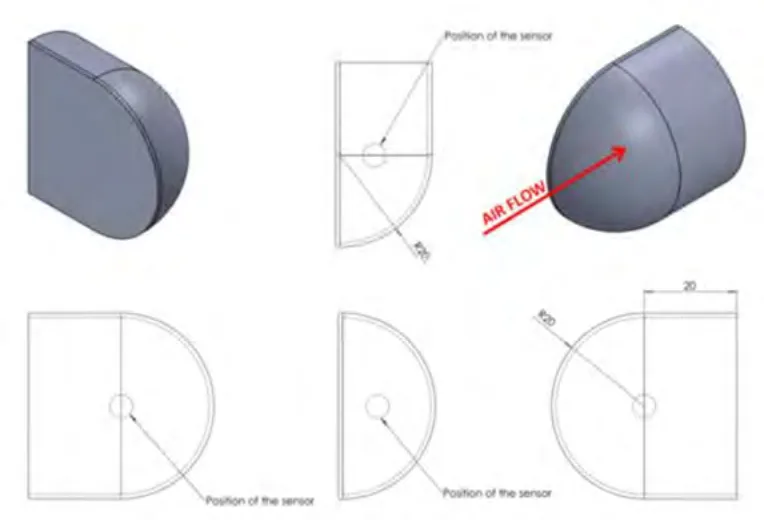
c/空調システムは、ＬＭＰ２で公認されたすべての車両に共通する。それは走行中一定して常に機能する状態にあるべきである。16.9 コクピットは、液漏れが生じた際に内部にそれが堆積していくことがないような設計でなければならない。16.10 サバイバルセルは、３つの識別システム（ＲＦＩＤ）を収容すること。それらは以下に配置されること： － 燃料充填口に近接する各側面に１つ－ サバイバルセルの頂部に１つシャシー製造業者は、以下の情報を含めた最新のデータリストをＦＩＡ／ＡＣＯに提供すること： － サバイバルセルの数－ ＲＦＩＤ番号－ サバイバルセルの正確な重量（安全性試験を受ける状態）－ 生産日
P.50第１７条安全装置17.1 一般
一般的原則として、車両が安全な構造であることを実証するのは競技参加者／コンストラクターの責任である。17.2 消火器
17.2.1以下の製品の使用は禁止される: ＢＣＦ、ＮＡＦ 17.2.2すべての車両には、第２５３条７項に従ったＦＩＡ公認の消火装置が装備されていなければならないが、外側からの起動の方法については除く。外部の消火器スイッチ：マーシャルが外側から装置を起動できるよう、２つのスイッチは：・ 車両の左右に１つずつ、車両中心線に左右対称に、Ｚダッシュボード＋ ４０ｍｍの下の線の下方で、Ａピラーの前方で、サバイバルセルに固定して配置されなければならない。・ ドア開口部から３５０ｍｍ未満でなければならない。・ 次のように設計されなければならない：
－ 車両内部のすべての電気回路を切れるように。－ 消火器が起動するように。・ マーシャルが偶発的にパワー回路に電圧を再び加えることが出来ないように。・ 離れた位置からフックにより操作できるハンドルあるいはリングが取り付けられる。このハンドルあるいはリングは、最低１００ｍｍ直径の赤く縁取りされた白色の円の中に赤字で"Ｅ"と示したマークと、ハンドルあるいはリングを指し示すように配置した赤い矢印で表示されなければならない。それは輝度反射特性でなければならない。
17.3 安全ベルト
17.3.1 ２本の肩ストラップ、１本の腹部ストラップおよび脚の間に２本のストラップが義務付けられる。17.3.2これらのストラップはＦＩＡ基準８８５３－２０１６に合致していなければならない。17.3.3 ２つのバックルを備えた安全ベルトは禁止される。17.3.4肩ストラップに取り付けられた伸縮性のコードは禁止される。
P.5117.4 後方視界ミラー
17.4.1 ２つの後方視界ミラー（ボディワーク両側にそれぞれ１つ）が後方の効果的視界を提供しなければならない。17.4.2 ＦＩＡ／ＡＣＯテクニカルデリゲートは、正常に着座したドライバーが後続車を明らかに明確にできることを、実証テスト証明により確認しなければならない。この目的ために、ドライバーは、以下に位置が詳述される車両後方に置かれたボード上のどこかに置かれる高さ７５ｍｍ幅５０ｍｍの文字または数字を識別するよう求められる： － 高さ：地面より４００ｍｍ～１０００ｍｍ － 幅：車両中心線の何れかの側０ｍから５０００ｍｍ後方視界カメラを０ｍ～２０００ｍｍの間で使用することが認められる。－ 位置：車両のリアホイール中心線後方５ｍ
17.4.3最小面積：各ミラー１５０ｃｍ２
17.4.4後方視界用ミラーは昼間／夜間モードがなければならない。ミラーにフィルムを追加することができる。17.4.5後方視界用ミラーはボディワークに統合すべきではない。17.5 カメラ
17.5.1後方および前方／側方視界のために車両後部にカメラを追加すること、またコクピット内にスクリーンを追加することが認められる。そのスクリーンは昼間／夜間モードがなければならない。カメラは車両の最大高を超えて突出することが許されるが、特定の許容が公認の間に与えられることが条件となる。それらの設計の目的は空力的効果を提供するものであってはならない。17.5.2カメラは昼間／夜間モードがなければならない。17.5.3取得データによりドライビング分析をする特有の車載カメラシステムが許可されるが、公認されていなければならず、－ 最大で１枚のレンズが取り付けられる。－ 専用のコネクターによって車両から電気的に動力を得ることができる； － 専用のコネクターによりＣＡＮバスにつなげることができる。－ 配置および取り付けは車両製造者により公認されることが義務付けられている。－ 取り付け装置は２５Ｇの減速度を受けて緩むことなく耐えることができなければならない。－ カメラはドライバーの視界、また降車時、さらに緊急の脱出を妨げるものであってはならない。
P.52－ システムの重量は車両の最低重量に含まれない。－ 関連する特定のＧＰＳは受け入れならない（車両に搭載されるＦＩＡ／
ＡＣＯのもののみが認められる）。17.6 ヘッドレスト、頭部保護体、および脚部保護体
17.6.1すべての車両は、以下の条件を満たすドライバー頭部保護のためのパッド域を装備しなければならない :・ 第１２図の寸法を遵守しなければならない。・ ロールオーバー構造体の高さが最小である場合は、その下方水平面をサバイバルセルの基準面からＺ+６００ｍｍとしなければならない（構造体の高さが異なる場合は数値が上げられる）・ 後部ロールオーバー構造体の前面の垂直面に最後端点がこなければならない。・ ヘッドレストの２箇所の側方部分の間の距離が、チーム専任ドライバーで最も小さいヘルメットの各側面に最大４０ｍｍのクリアランスができるように配置されなければならない。・ "Confor"CF45（青）（ＦＩＡテクニカルリストＮｏ.１７）の仕様に応じた素材で製作されていること。・ ドライバーの頭部が接触する可能性のあるすべての領域にわたり、重量で５０％（±５％）の硬化樹脂含有量のある、２層とも６０ｇ／ｍ２の織物から成るなる、あるいは１層が６０ｇ／ｍ２で１層が１７０ｇ／ｍ２の織物から成る平織構造の、２積層アラミド繊維／エポキシ樹脂複合基材プリプレグ材質により作られたカバーが装着されていること。アラミドカバーの表面加工は、ヘルメットの接触表面上の塗装および追加の噴射スプレー塗装以外一切認められない。使用済みの製品は、ヘルメットとの接触する際に表面の摩擦を最小限にできるものでなければならない。・ すべての部品の間で、素材の不連続域が２０ｍｍをこえないこと（部品、ドアの取り外し）車両上のヘッドレスト支持具（含複数）は、スポーツカーの安全構造の承認手順（シャシーコンストラクターのみ、ＦＩＡ技術部より要求次第入手可能）に従い、ＦＩＡにより承認されなければならない。予定された試験日より、最低でも８週間前の通知がなされる。必要な場合は、ドライバーの快適性だけのために、１０ｍｍ以下の厚さの追加パッドをこのヘッドレストに付けることができるが、低摩擦表面を組み入れている同様の素材でできていることを条件とする。
17.6.2一切の垂直横向き断面に最小１５００ｍｍ２の面積が守られていることを条件に、前部側方部品の一部分の適合が「ＺＯＮＥ ＡＲＭ」（第１２図）に示される領域に認められる。
17.6.3同乗者側の側方部品を可動となる設計をする必要が有る場合、保護体の安全な位置が正確に保たれていない時に、ＩＣＥおよび一切の動力供給電気モーターが始動することを禁止するため、少なくとも１つの近接センサーが義務付けられる。
P.5317.6.4さらに、レスキュー隊員の利便性のために、上述のパッド取り外し方法が明確に示されていなければならず、取り付け部品はシグナルカラーの矢印でマーキングされていなければならない。この取り外しは工具の使用なく可能であるべきで、荒々しい行為をすることなく行えること（例として、それに限られることはなく：デュアルロックは認められない）。17.6.5上述のパッドのいかなる部分も、ドライバーの横方向の視界を制限することはできない。17.6.6ドライバーが装着する頭頸部支持具は、ドライバーが通常の運転位置に着座した時に、車両のいかなる構造的部分からも２５ｍｍ未満となってはならない。17.6.7 2020年3月1日から適用車両には、衝突時にドライバーの脚部がコックピットの壁および／あるいは第16.7.3項で許可されているその他の要素に当たらないようにできる適切な脚部保護構造体が取り付けられていなければならない。・ ドライバーの足が接触する可能性のある領域には、FIAテクニカルリスト
17に掲載されている素材でパッド付けしなければならない。パッドの最小厚さ：25 mm。・ それは公認されなければならない。17.7 座席ドライバーの側方支持は、座席と、第１３図に明記される寸法に合致しなければならない支持部の基本領域によって達成されなければならない。体の側面の支持はスポーツカーの安全構造の承認手順（シャシーコンストラクターのみ、ＦＩＡ技術部より要求のあり次第入手可能）に従い、ＦＩＡによって承認されなければならない。予定された試験日より、最低でも８週間前の通知がなされる。
17.8 頭頸部支持
ドライバーが装着する頭頸部支持具は、ドライバーが通常の運転位置に着座した時に車両のいかなる構造的部分からも２５ｍｍ未満となってはならない。17.9 マスタースイッチ
17.9.1安全ベルトを締め正常に着座した状態で、ドライバーは放電防止型サーキットブレーカースイッチによりすべての電気回路を遮断することができ、エンジンを停止することができなければならない。17.9.2サーキットブレーカーのスイッチはドライバーから容易に手の届く位置になければならない：それらのスイッチは白い縁取りをした一辺が最小３０ｍｍの青色の正三角形の中に赤色の稲妻を描いた標識で明確に表示されなければならない。
P.54三角形は矢印がハンドルまたはリングを指し示すような角度でなければならない。
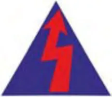
17.10 牽引フック
前後の牽引フックは以下の通りでなければならない :・ 堅牢で鉄製であり、破損の可能性のない内径８０ｍｍ～１００ｍｍ厚さが最低５ｍｍであること（マーシャルの使用するストラップを切断したり損傷することのないよう丸みを帯びた断面）。・ 金属製の堅牢な１つの部品でシャシー／構造体に確実に固定されていること（ケーブルフープは認められない）。・ 上から見てボディワークの外周辺の内側にあること。・ 外側から見え容易に確認でき、黄色、赤色あるいはオレンジ色に塗装されている
こと。・ グラベルベッドに停止した車両を牽引できること。牽引フックがボディワークに統合されている場合、グローブをはめたマーシャルがそれらを引き出すためのテープ/ハンドルがなければならない。このテープ/ハンドルはシグナルカラーでなければならない。透明でないテープや牽引フックを覆うカバーは厳禁とされる。シグナルカラーの牽引フックはボディワーク上にボディワーク上にフックのどの部分を掴むかを示す矢印（シグナルカラーであるか、輝度反射特性のもの）がなければならない（ブラケットあるいはブラケット上のテープ／レバー）。17.11 車両を吊り上げる装置車両をクレーンで吊り上げるために、車両頂部に２箇所の固定点を設置することが義務付けられる。これらの固定点は、車両の頂部構造体に統合された２つの吊り上げ用ブッシュでなければならない（付則Ｌ比較参照）。それらにより、車両を地上１.５ｍの高さに安全に吊り上げることができなければならない。燃料タンク半量を満たした完全な状態での車両の角度は（吊り上げられた時に）２ ５度未満でなければならない。ブッシュは利用しやすい位置にあり、特別なマーキングで示されていなければならない。２つのブッシュは、開口部周囲を５ｍｍ厚みの円でマーキング（シグナルカラーであるか、輝度反射特性のもの）されていなければならない。開口部域は、吊り上げピンを挿入する必要がある場合、それの障害とならないよう、走路からの破片飛散の危険性に備えて覆われていなければならない覆いとなるステ
P.55ッカーは、グローブをしたマーシャルが穴から容易に剥がすことができ、正確で完全な吊り上げピンの挿入ができるようなものである必要がある。堅牢なカバーは一切禁止される。ブッシュが横から見て見えない場合、横から見えるように（片側に１つの）矢印（シグナルカラーであるか、輝度反射特性のもの）が利用されなければならない。それらの相対的距離は、吊り上げブームの距離に対応していなければならない： ３２０～４００ｍｍ。ブッシュの最大角度は垂直に対して４５度である。17.12 スイッチのレバーやプッシュボタンの粘着性のある覆いはいかなるタイプのものも安全性のため厳禁とされる。17.13 衝撃警告システム救助クルーが事故損傷度の表示を即座に把握するため、各車両はＦＩＡデータロガーに接続する２つの警告灯を取り付けなければならない。これらのライトは、ウインドスクリーン底部の両側の、外付け消火器スイッチの近くに配置されなければならない。第１８条安全構造体18.1 後部衝撃吸収構造体18.1.1ギアボックスの後方で、車両中心線に左右対称に、衝撃吸収構造体が、その最後面の中央を基準面上方２５０ｍｍから３００ｍｍの間にして、またリアホイール中心線の後方５７５ｍｍ以上に取り付けられなければならない。この構造体はボディワークの構成要素と見なされる。18.1.2この構造体は、使用中想定される温度に大きく影響を被ることのない材質で製作されていなければならない。この構造体に追加して取り付けが認められる構成要素は唯一、リアウイングピラー、ジャッキ、牽引フック、エンジンカバーおよび床および／あるいはリアディフューザーである。18.1.3後部衝撃構造体の承認・ 後部衝撃構造体は、スポーツカーの安全構造承認手順（シャシーコンストラクターのみ、要求次第ＦＩＡ技術部より入手可能）に従い、ＦＩＡによって承認されなければならない。18.2 ロールオーバー構造体２つの安全ロールオーバー構造体（前部および後部）が義務付けられる。それらは以下の通りでなければならない :
P.56・ 前部では幅最低３００ｍｍに渡って基準面上方に少なくとも９５０ｍｍで、後部では幅最低４００ｍｍに渡って基準面上方に少なくとも９３５ｍｍであること。・ 最低６００ｍｍ離れていること。・ 車両の前後方向垂直面に対して左右対称であること。18.2.1後部ロールオーバー構造体後部構造体も、以下の通りでなければならない。・ サバイバルセルの取り付け部の高さにおいて計測し、全長が最低３００ ｍｍであること（つまり、基準面から最低５００ｍｍ）。エンジンブロック、シリンダーヘッド、カムカバーの部分およびサバイバルセルに挿入されたエンジン固定部の目に見える要素は一切、後部ロールオーバー構造体の前部垂直面から３００ｍｍ未満の距離にあることは認められない。サバイバルセルの背面は、サバイバルセルの最大横断面積の少なくとも20％ （YZ平面内）の垂直面積を有すること。 最大断面積は、内部開口面積を除去することなく計算される。2014年1月1日から2015年6月30日までの間で公認されたクローズドLMPサバイバルセルを除いて、サバイバルセルの背面はリアロールオーバー構造体の前面から少なくとも300mmのところに配置すること。
・ ロールオーバー構造体は、車両を直接上から見た時に、エンジン（エン
ジンブロックおよびシリンダーヘッド）のどの部分をも遮ってはならない。エンジン側の面の中央部は、エンジン前部オイルタンクの搭載ができるように設計されていなければならない（第１４図参照）。前から見て、この構造体は車両中心線に対し左右対称でなければならない。
18.2.2ロールオーバー構造体の承認各ロールオーバー構造体は、スポーツカーの安全構造体の承認手順（ＦＩＡ技術部により、要求次第入手可能。シャシーコンストラクターのみ）に従い、ＦＩＡによって承認されなければならない。18.3 サバイバルセルおよび前部衝撃吸収構造体
18.3.1一般規定・ シャシー構造体は、燃料タンクを含むサバイバルセルを含み、ドライバーの足が最も前にある状態で、ドライバーの足の少なくとも１５０ｍｍ前の垂直面から燃料タンクの後方へ伸張していなければならない。・ ドライバーの足の前にある垂直面とリアロールバー構造体の前にある垂直面との間は、少なくとも１５４０ｍｍの距離があること。・ サバイバルセルは、コクピット出入口部の全長に沿って最低５００ｍｍの高さで側方保護を提供していなければならない。
P.57・ その側方保護体の垂直の外側壁は、横方向に最低９００ｍｍ互いに離れていなければならず、これがコクピット出入口部の長さの最低８０％となること。・ １枚の補助パネルが、サバイバルセルに統合されるか、またはその左右それぞれに恒久的に、適切な接着剤を用い（付則Ⅰの仕様）、すべての重複接合部を含めて表面全体に渡って適用され（下記に定められる）貼り付けられなければならない。それは、最大で３つの部分で構成され、その仕様は付則Ⅰに従っていなければならない。２つ以上の部分で構成される場合、すべての接合隣接部は最低２５ｍｍに渡って重複させなければならない。これらの重複部は両方の部分の厚みの線形率逓減部も含むことができる。横から見て、それは以下の通りでなければならない： － Ｘ軸方向で、ドライバーの脚用と同乗者の脚用の容積（第１６.２項に定める）の前部面との間にある領域を、後部ローローバー構造体の前方の面までを覆う（第８図）。２５ｍｍの水平線形逓減部を両端に含めることができる。－ Ｚ軸方向で、ステアリングホイールとドライバーの脚用と同乗者の脚用の容積（第１６.２項に定める）の前方面との間にある領域内で、この容積の底面から上面まで伸張していなければならない。－ Ｚ軸方向で、ステアリングホイール後方の、後部ロールオーバー構造体前部面までの領域で、基準面上方５０ｍｍから４５０ｍｍまで伸張していなければならない。－ Ｚ軸方向で、ステアリングホイールと、座席ベルトストラップ固定部（いつくかの位置が可能である場合は、最も前の位置）の中心を通る平面との間の領域で、単一の直線によって低い２つの端部を連結することが認められる。配線の穴および必須の取り付け具のため、片側で合計４０,０００ｍｍ2の切抜き部をこのパネルに作ることが許される。・ コクピットと、ボディワーク頂部に搭載が義務付けられるいくつかの公式装備との間のケーブルを通すために、サバイバルセルの頂部に２５ｍ ｍの穴を開けることが義務付けられる。これらの装備は、第１１図に示されるレセプタクルの内側のフィン（あるいはエンジンの空気入口）の頂部に搭載されなければならないもの、およびカーボンファイバーで製作されなければならないものもある・ サバイバルセルの前方には特別な衝撃吸収構造体の取り付けがなけれ
ばならない。この構造体はサバイバルセルに統合され一体となる必要はないが、セルに確実に固定されていなければならない。18.3.2サバイバルセルと前方衝撃吸収構造体の承認
・ サバイバルセルと前方衝撃吸収構造体は、スポーツカーの安全構造体の
承認手順（ＦＩＡ技術部により、要求次第入手可能。シャシーコンストラクターのみ）に従い、ＦＩＡによって承認されなければならない。
18.3.3すべてのサバイバルセルには、３つのＲＦＩＤ（燃料補給のための開口部周辺の両側に１つずつ、サバイバルセルの最上部の前面に１つ）を収容のこと。
P.58コンストラクターは周期的にサバイバルセル／ＲＦＩＤの分布についてＦ ＩＡ／ＡＣＯに通知する。18.4 改造ＦＩＡに承認された安全構造体についての一切の改造は、ＦＩＡ技術部にシャシーコンストラクターが提出しなければならない。ＦＩＡ技術部は、改造の承認のために新規試験を受けることを要請する権限を留保する。18.5 マグネシウム厚さ３ｍｍ未満のシート以外は認められる。18.6 防火壁
18.6.1エンジン室よりコクピット内に火炎が侵入するのを防ぐ完全に密封された金属製の防火壁が義務付けられる。18.6.2耐火性のサンドイッチ構造素材から成り、金属製粘着シートにより覆われた隔壁が認められる。18.6.3防火壁に開けられる一切の穴は、制御系および配線を通すための最小限のものでなければならず、完全に密封されなければならない。第１９条燃料19.1 供給
19.1.1オーガナイザーは１タイプのみの燃料を提供する。19.2 仕様
２０％がバイオ基礎燃料。第２０条終局条文－係争20.1 言語バージョン
規則の実施および解釈についてはフランス語版のみが有効とされる。第２１条性能の調整
耐久コミッティは以下の要素を、各車両モデルについて調整する権限を留保する。・ 車両の最低重量・ エアリストリクターのサイズ
P.59・ 燃料タンク容量・ その他耐久コミッティが必要とみなす技術的変更。しかしながら、各レースの後で、あるいは各レースに従って、調整を行うことは論外である。調節が必要な場合は、耐久コミッティにより、できればレースシーズン終了後に義務化される。しかしながら、ある車両モデルの性能が抜きん出て高い場合は、それ以降のレースでその性能を下げるために、耐久コミッティが直ちに実施する方策を決定することができる。耐久コミッティは、遅いモデルの性能を上げるよりはむしろ、速いモデルの性能を下げることを優先する。性能の調整は耐久コミッティのみが責任を負う。
P.60ＬＭＰ２規則
付則
No.付則A 給油G ＦＩＡ試験手順０３／０３ H 公認I 側方貫入パネルの仕様Ｌ 吊り上げ装置
P.61付則Ａ 給油1/イベント期間中を通じ：燃料補給は、それが行われる走路から最大２ｍの高さ（ル・マン２４時間では２.６ ０ｍ）から重力によって行われる以外、車両にいかなる方法で給油することも禁止される。2/プラクティス走行およびレース中：車両１台につき、下記の（ＦＩＡ付則Ｊ項）第２５２－７図に従った１つの独立した燃料補給タンクのみが使用されなければならない。このタンクは内側が単純な円筒形の形状でなければならず、燃料の流れを向上させる可能性のあるいかなる内部部品もあってはならない。タンクの内側に認められる唯一の部品は：・外部の構成部品の取り付け具・温度と燃料残量位センサー・上述の構成部品の密閉具・給油用の管
タンク内側の底部の平坦部の公差は２ｍｍでなければならない。流量リストリクター最上部面（A）は補給タンクの内部底面の高さでなければならない。このリストリクターは、下記に詳述されるナットリングを使用し、独立した補給タンクに固定されなければならない。安全上の理由から、このタンクは、タワーにより以下の要領で台車に固定されなければならない： － すべてのタワー構成部品は、トロリーに対して一切の遊びがない状態で機械的に組み立てられていなければならない。－ 台車の底面は少なくとも２ｍ2の表面域がなければならず、４個の自動ブレーキ式のキャスターを備えたケースにより製作されていなければならない。また燃料を満たした燃料タンクよりも重いバラストを積まなければならない。－ 台車のピットレーンに面する部分で高さ１.３ｍより下には、一切の配管（燃料用あるいはエアガンなど）が突き出していてはならない。上記の要領に則っていれば、タンクの下に計量プレートを置くことにより、燃料の計量システムを設置してもよい。次の条件下で、給油ホースと通気ホースを支えるための部材が台車に取り付けられてもよい。－ 当該部材はタンクおよびタワーの両方から独立していなければならない。
P.62－ 当該部材は台車に対して遊びがあることが推奨される。(垂直方向の軸を中心に回転) － 当該部材の全長は４.００ｍを超えてはならず、その付属品も含め、その全長にわたり、２.００ｍの高さの物が自由に通過できる空間がなければならない。－ 当該部材の端には、競技車両のレースナンバーを明記した識別プレートを取り付
けなければならない。3/タンクの上方ＦＩＡ規定に合致した換気装置（下記付則Ｊ項第２５２－７図を参照）がなければならない。タンクの換気は、このシステムによってのみ行われること。その他すべての開口部は密封して塞がれなければならない。換気ホースは下記第２５２－７図に従い、側面に連結されなければならないが、ル・マンでは充填およびタンク内残量を検査する装置はオーガナイザーによって提供される。4/燃料補給パイプ少なくとも３.００ｍの長さがなければならず（ル・マン２４時間では４.００ｍ）、それにはクイックカップリングとオス型給油バルブが含まれていること。パイプは車両に取り付けられた給油口に合致する漏出防止のカップリングが備えられていなければならない。燃料補給の間、通気口の出口は適切なカップリングで独立した補給タンクに連結されていなければならない。5/燃料補給を始める前に、車両のコネクターは電気的に地面にアースされていなければならない。また、カップリングから燃料補給タンクとその支持架に至る燃料補給システムのすべての金属部品も、電気的に地面にアースされていなければならない。6/給油要員は、燃料補給手順進行中は常に、補給タンクの出口の自動閉鎖ボールバルブ（デッドマン機構の原理）の操作および流量制御ができるように、立ち会っていなければならない。7/使用されるすべてのホースと継ぎ手は最大内径１．５インチを有していること。8/オーバーフローボトルの使用は、ピット内あるいはピット周囲にて、いかなるものも禁止される。供給業者からの燃料を貯蔵するための一切の容器には、自動閉鎖カップリングの取り付けが必要である。最大容量100リットルの１つのタンク（臨時に指定される）が、ピット内で車両のタンク内の燃料を一時的に移送するため、また供給ドラム内、独立したタンクへの移送および充填時のポンプ汲み上げを確実にするために、使用されなければならない。ル・マンと、予選走行およびレースの間は例外とし、車両が自己のピットにある時に、車両のタンクをその臨時タンクで直接充填することが認められる。それは完全に密封され、逆流防止バルブのついたブリーザーパイプを有し、一切の液漏れのないよう設計されていなければならない。臨時燃料タンク、車両のタンク、供給ドラムおよび独立したタンクをつなげる配管は、
P.63車両に取り付けられる燃料配管の要件を満たしていなければならない。臨時タンクは排出ホースに収容されている燃料の回収ができるように、車両と同じカップリングが取り付けられていなければならない。しかしながら、臨時タンクにカプラー(連結器）が全くない場合には、競技規則第７６条１項７に記載されているレセプタクル（貯蔵容器）を使用することが認められる。9/メーターが使用されている場合、それはＦＩＡ公認のタイプであること。視認窓が補給タンクの外側に付けられている場合、それはタンクにできるだけ近い位置に取り付けられた隔離バルブ付きでなければならない。10/流量リストリクターは、以下の図面に従い、補給タンクの底部出口に取り付けられなければならない。その直径”D”は、耐久コミッティの裁量にて採用される。11/独立した補給タンクは、そのピットに正式に指定された競技参加者のみが利用することができる。12/二重層になった底部の使用は禁止される。

次の事前注意事項が守られること。1）規定の剛性セクション内またはホース内に部品を追加することは認められない2）標準の、改造されていないSTAUBLI 給油ノズルのみが使用できる。3）特に明記されていない限り、許容差は片側のみとする。例d = 39 + 0.1→ 39.0 <d <39.1 全体図
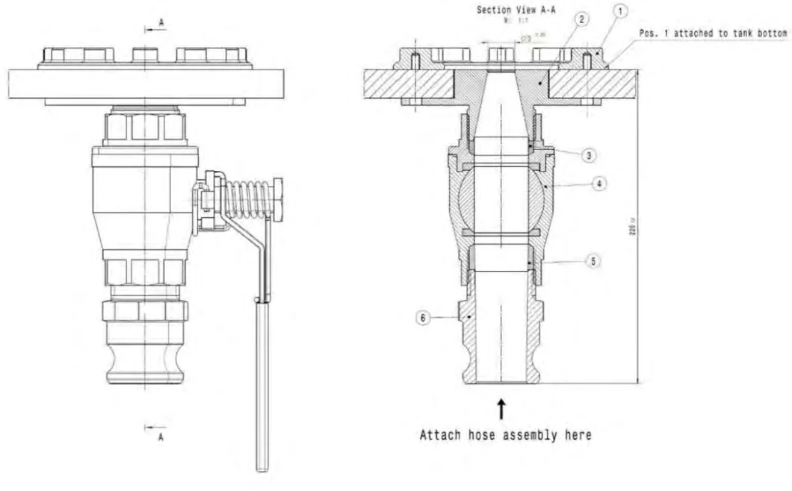
断面A-A位置１ タンク底部に取り付けホースアセンブリをここに取り付け
P.65位置①ナットリング
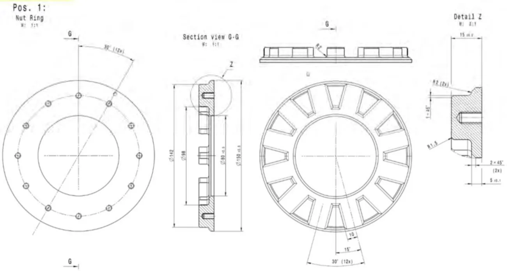
位置②リストリクター

位置２：リストリクター 断面Ｂ－Ｂ 燃料タンク底部厚み ０／０．５ｍｍ
φ３９はFilet（フィレ）が機械加工される前のリストリクターの出口直径ＢはφＤによる角度として定義される。今後最終決定される[ mm ]コメント19.00 Diesel LM 2016 22.45 Petrol WEC cold / warm 2016 20.75 Diesel WEC warm 2016 20.80 Diesel WEC cold 2016 20.50 Petrol LM 2016
P.66位置③アダプターリング

位置④バルブ

P.67位置⑤アダプターリング

Ｃは出入り口直径による角度として定義される。
P.68ホースアセンブリ
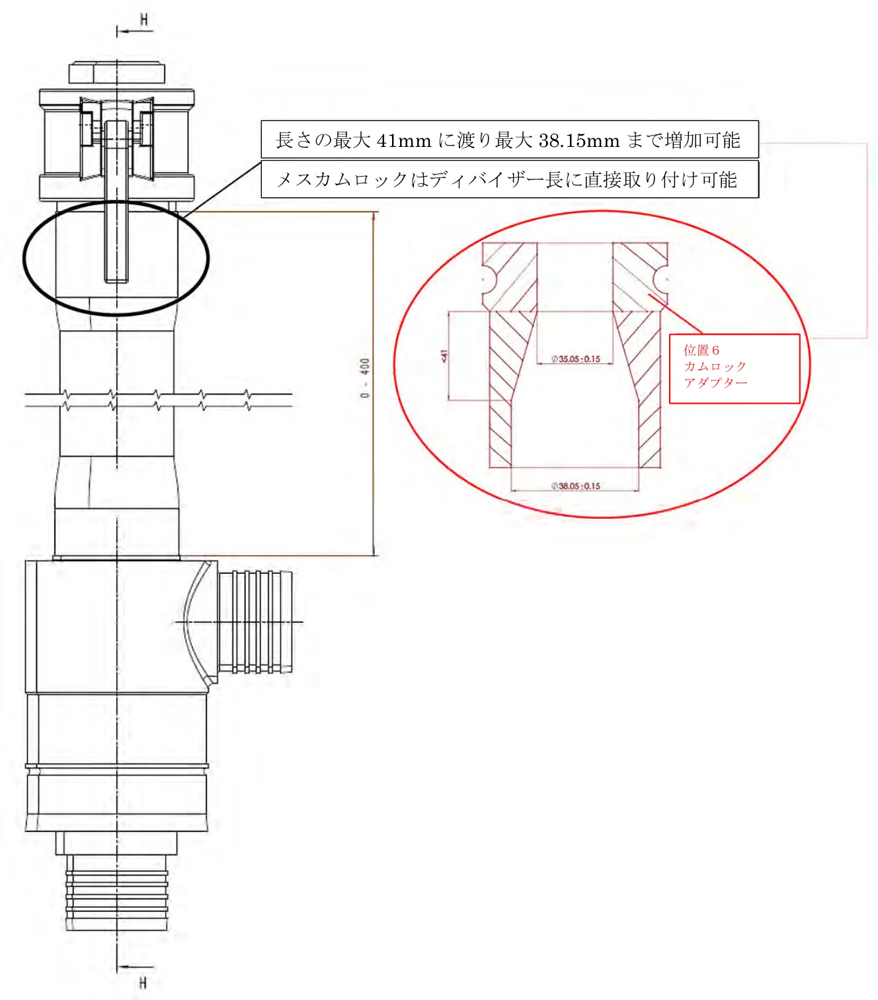
P.69ディバイサー（分離器）
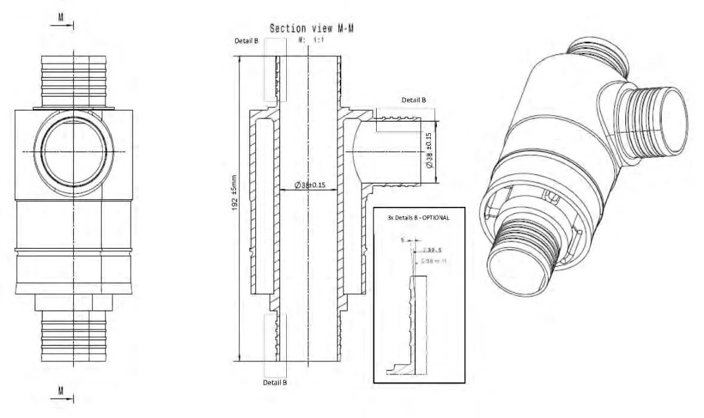
８／全体公差すべての図面について、公差が明記されていな場合、基準ISO 2768 fHを使用
P.70付則Ｇ
ＦＩＡ試験手順０３／０３ 金属材質の比弾性率1.1 ３５GPa/gm/cm3を上回り金属含有量が質量パーセントで６０％を上回るすべての材質は、イギリス、テディントンのイギリス国立物理学研究所において試験を受けなければならない。1.2すべての試験は、２０～２５℃で、分析の基礎として、ASTM111手順を利用して実施される。1.3各試料タイプについて１０の見本が提供されなければならない。1.4均一な試料FTSB、FTSDあるいはFTSEが提供されなければならない。試料の図面が、この試験の手順に添えられる。1.5データは通常、ヤング係数を計算するために、接線係数および割線係数が利用され分析される。1.6試験は通常、失敗に対して実施されることはなく、応力歪み解析曲線の初期（線形）の部分のみが計測される。1.7係数計測は、曲線の線形部分を得るのに問題がない限り、通常最初の負荷適用循環からのみなされる。この場合、いくつかのプリロードまたは反復負荷循環が実施される。1.8試料密度を評価するためにアルキメデスの原理が使用される。1.9各試料の報告書には通常、すべての関連情報、応力歪み解析曲線、ヤング係数値、密度測定および計算された特定係数が含まれる。1.10 比弾性係数結果は、最も近い0.1GPa/gm/ cm3までを引用する。４０GPa/gm/ cm3（全不確実性を含め)を上回った材質は、第２条６項を満たさないとみなされる。1.11 疑義が生じた場合は、問題の車両の構成部品（含複数）は、UKAS基準に従い、定量化学分析を受ける。1.12 イギリス国立物理学研究所は、構成部品の化学分析と比弾性係数試験に提供された試料の化学分析とを比較し、同一の材質から製作されていることを確認する。
P.71付則Ｈ
公認
１一般公認期間は、２０１７年から２０２７年までの１１年間である。
基本的な公認手順は、ＦＩＡ／ＡＣＯによって技術規則に基づいて処理され、公認書式がこれについて提供される。この文書は、各顧客に無料で提供されること。ＬＭＰ２車両は、ＬＭＰ２シャシー（シャシーコンストラクター製）、ＦＩＡ／ＡＣ Ｏ公認エンジン、ＦＩＡ／ＡＣＯ完全公認の電子機器で製作されている。コンストラクターは、現在の技術規制に準拠して、２０１７－２０２７年の期間に１台のＬＭＰ２車両を製作すること。この車両は公認され、顧客によって改造されないこと。公認の原則に違反した場合、コンストラクターには罰則が科され、車両の適格性は取り消される場合がある。原則として、各公認書式（基本、Ｅｖｏ、Ｅｒ）について、シャシーコンストラクターは１つのバージョンの「ドラフト」と１つのバージョン「ファイナル」を提供すること。バージョン番号が遵守されていない場合や期限が守られない場合には罰金が科される。２基本公認2.1一般公認書式は各車両について記入されること。公認手続に関わる締め切りは、候補者が遵守すべき非常に厳しいものである。そのような期限を守らない場合には、制裁が課される。制裁は、罰金、あるいは手続からの除外、または公認の取消しで構成できる。2.2公認スケジュール（締め切り）ステップ１：２０１６年２月１日サバイバルセルのＣＡＤ検証。すべてのコンストラクターは、サバイバルセル（外面および内面を含む）のＣＡＤファイルを２０１６年１月１日に送信する。
P.72この日から、外面は凍結され、内面には小さな変更を加えることができるが、それらはＦＩＡ／ＡＣＯの承認を得なければならない。ステップ２：２０１６年５月１日ボディワーク、機械要素、ＬＭキットのＣＡＤ検証。すべてのコンストラクターは、ボディワーク、機械要素、ＬＭキットのＣＡＤファイルを２０１６年４月１日に送信する。この日以降、変更は許可されるが、ＦＩＡ／ＡＣＯに文書化されたものが提出されるべきである。ステップ３：２０１６年７月１日安全性試験の検証。すべての安全性試験は、２０１６年７月１日より前に検証されること。すべての安全性試験は、２０１６年６月１日より前に少なくとも１回は行われていること。すべてのコンストラクターは、クラッシュテストの少なくとも１５日前に、サバイバルセルの最終ＣＡＤファイルを送信すること。ステップ４：２０１６年９月１５日ホモロゲーションフォーム（ＬＭキットを含む）とスペアパーツ価格表の提出。すべてのコンストラクターはボディワーク、機械要素とＬＭキットの最終ＣＡＤファイルを２０１６年９月１５日に送信すること。この時点から、設計の最終的な変更はすべてステップ５の前に承認されること。ＦＩＡ／ＡＣＯは２０１６年１０月１５日より前にすべてのコンストラクターにフィードバックを行うものとする。ステップ５：２０１６年１２月１日〜１５日最終車両と進化型ＬＭ検査。すべてのフィードバックは、コンストラクターにこの検査中に与えられる。2.3公認の検証公認料金はコンストラクター（２５,０００ユーロ）に請求され、２０１６年１月１５日より前に支払うこと。追加の訪問を要する公認の別のステップでは、シャシーコンストラクターは３,０ ００ユーロの追加料金を支払わなければならない。３進化（ＥＶＯ）3.1一般それは進化書式で行われること。進化書式に含まれるすべての記載説明は、基本公認の説明を取り消してそれに置き換えられる。
P.73この書式に記載されている構成要素は個別に使用することはできず、全体で使用しなければならない。a/ 唯一可能な進化は、以下のためである：
－ 安全性－ 信頼性－ コスト削減－ 装置の商業化の終了進化の目的は書式上に明確に記載されます。b/ 他のシャシーコンストラクターの意見を聴き、ＦＩＡ／ＡＣＯが認定した性能
が不十分な場合に例外が認められる可能性がある。c/ 進化はＦＩＡ／ＡＣＯによって義務化される可能性がある。d/ ル・マンキットの進化は、基本公認と同時に公認される。3.2進化スケジュール耐久コミッティの裁量で不可抗力と判断された場合を除き、すでに公認された車両に行われた進化の公認と、イベントに参加する前の車検提示との間に最低１５日間を必要とする。すでに公認された車両の進化書式の最初の草案提出と、公認グループによその承認の期限との間に最低１５日を必要とする。ＥＶＯ ＬＭは、車両の公認と同じ締め切りとなるべきである。3.3進化の申請a/ 公認される場合､進化はすべての車両について適用されること｡ b/ 以下の公認料金がｺﾝｽﾄﾗｸﾀｰに請求される:
* 3.1.a. 安全性4,671€ * 3.1.a. 信頼性4,671€ * 3.1.a. コスト削減4,671€ 3.1.a. 商品化の終了無料3.1.b.性能の不足7,848€ 3.1.c. FIA / ACO 無料各進化書式は1 つの項目/問題のみを参照すべきである。
c/ 3.1.a に記述されている進化の場合、コンストラクターはスペアパーツの価格
表の原則を遵守し、それに応じて価格表を更新すること。改造された部品の価格は、進化書式で報告されること。
d/ 3.1.b に記載されている進化の場合、コンストラクターは、各顧客に対して無償でパーツまたは組立品を交換すること（スペアパーツを含む）。これは、使用可能な部品の交換をベースに行われる。
P.74e/ 3.1.c に記述されている進化の場合、ＦＩＡ／ＡＣＯは他のスペアパーツの価格に影響を与えることなく上限価格を定義する。f/ 3.1.d に記載されている進化は、公認料金に含まれている。顧客への最大販売価格は１キットにつき１万ユーロとなる。g/ 遅延は以下の表に従って罰せられる：
半期半期公認公認書類預託公認書類預託申請の初戦基本基準日－２か月基準日－１か月基準日進化(EVO)基準日－30日基準日－15日基準日公認料金100% 150% 200% 300% 500% 4誤記訂正（ER) 4.1一般
ＦＩＡ／ＡＣＯの裁量による。誤記訂正は、書式の編纂時に発生した誤りを訂正することができるが、既存の部品および／あるいは特性を置き換えるものではない。誤記訂正が既に条項（部品および/または特性）に受け入れられている場合、誤記はもう修正できなくなる。4.2検証以下の公認料金はコンストラクターに請求される： － 7,848€ コンストラクターの要求による場合－ 7,848€ ＦＩＡ／ＡＣＯによって発見された場合（１回目）－ 10,000€ ＦＩＡ／ＡＣＯ（２回目）により発見された場合－ 10,000€ ＦＩＡ／ＡＣＯ（３回目以降）によって発見された場合
P.75付則 I
側方貫入パネルの仕様グローバル・インスティチュートフォー・モータースポーツ・セーフティ
ＬＭＰ１およびＬＭＰ２の
追加パネルの仕様
2016年4月13日1.0版概要本パネルは、高温硬化強化エポキシ樹脂組成物を浸透させたTorayca T1000G（あるいはT1100G）およびToyobo高弾性率ザイロン（PBO)繊維で製作されること。T1000G（あるいはT1100G）およびザイロン強化層にその他の樹脂が使用される場合は、それらは一体硬化成形が可能でなければならない。パネルの構成は擬似等方性とし、複雑な形態、配線のための切り抜きおよび側方衝撃吸収構造体配線と側方衝撃吸収構造体の切抜き部を覆うために必要なものを除き、一切の層の中にダーツ、継ぎ目あるいは隙間を作らないこと。外側のボディワークを取り付けるために、４層のザイロン外皮にのみリベートが認められる。限定された材質の１巻幅に応じるため、±４５°の各層に必要とされる一切の継ぎ目は、最低１０ｍｍの重なりをもたせ、多重焼付け（スーパーインポーズ）を避けるために、ラミネートを通じて互い違いにすること。パネルは製造者の推奨硬化サイクルに硬化されなければならない。パネルがサバイバルセルに統合（積層）されない場合、パネルは規定のフィルムあるいは粘着ペーストで、シャシーの全体の表面域に接着される。ザイロンHM-300gsm最小平均重量[285]gsm、６K繊維／引張、エポキシ樹脂に浸透させた、２×２綾織スタイル。T1000GあるいはT1100G -280gsm最小平均重量[269]gsm、12K繊維／引張、エポキシ樹脂に浸透させた２×２綾織あるいは5本ハーネスの朱子織。マトリックスシステムMTM49-3あるいはCycom2020エポキシ樹脂。または以下に一覧される適合材質。粘着性（シャシーについて）フィルム粘着性150gsm３M AF163-2 あるいはペースト粘着性３M 9323 B/A、または粘着性３M DP460。積層順序（０度はシャシーの前後方向軸となる）外側表面T1000G１層（0/90）ザイロン７層（±45、0/90、±45、0/90、±45、0/90、±45）T1000GあるいはT1100G１層（0/90）内側表面肉厚粘着部を除いた硬化パネルの最低肉厚は、[3.0]mmであること。エリア重量粘着部を除いた硬化パネルの最低エリア重量は、[8700]gmsであること。
P.76空隙パネルは空隙がないことが必須である。適合材質例１. Cytec提供
ザイロンHM-300gsm/Cycom2020エポキシ樹脂2×2綾織（重量でNOM42％）T1000G-12k 280gsm/ Cycom2020エポキシ樹脂を伴う2×2綾織あるいは5本ハーネス織（重量でNOM42％）２. ACG提供ザイロンHM-300gsm/MTM49-3エポキシ樹脂を伴う2×2綾織（重量でNOM43％）T1000G-12k 280gsm/ MTM49-3エポキシ樹脂を伴う2×2綾織あるいは5本ハーネス織（重量でNOM40％）３．TenCate提供ザイロンHM-300gsm/E750-02エポキシ樹脂を伴う2×2綾織（重量でNOM42％）T1000G-12k 280gsm/ E750-02エポキシ樹脂を伴う2×2綾織あるいは5本ハーネス織（重量でNOM42％）４．Delta Tech S.p.a提供
ザイロンHM-300gsm/DT195Nエポキシ樹脂を伴う2×2綾織（重量でNOM42％）T1000G-12k 280gsm/DT195Nエポキシ樹脂を伴う2×2綾織あるいは5本ハーネス織（重量でNOM42％）
P.77付則 L
一般的取り付け

挿入部詳細寸
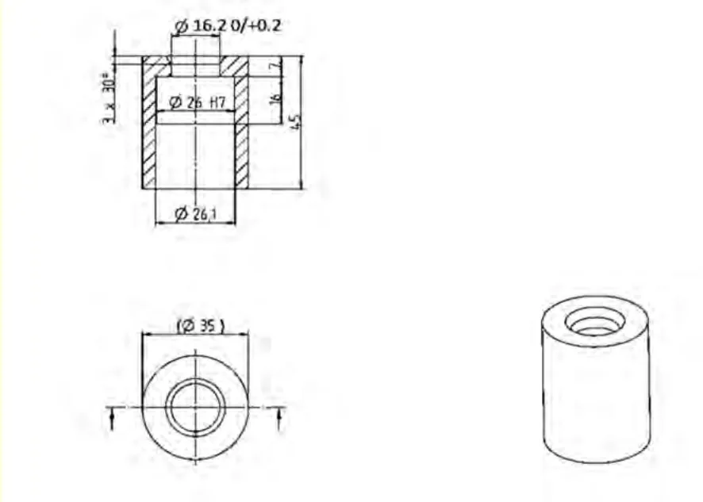
P.78ＬＭＰ１規則
図No.図1 基準面2 スキッドブロック3 テンプレート１、ドライバーおよび同乗者の身体の容積4 テンプレート２＆３ ドライバーおよび同乗者の頭部の容積、ドライバーの視界5 ボディワーク後部の横方向平板6 テンプレート３＆６、コクピットの出入り7 テンプレート７＆８、ドライバーの視界8 コクピット内のドライバーの位置9 テンプレート１～８の組み合わせ10 テンプレート９，１０および１１、ホイールアーチの切り抜き11 アンテナのレセプタクル図12 ヘッドレスト図13 座席の横方向から見た図14 コクピット空気温センサーのシールドの図
P.79図１

＜図中＞基準面Zゼロ、前部車軸中心線、後面視、前部、エリア１、エリア２、エリア３、後部車軸中心線、前面視垂直壁は連続的で、切れ目なく、湾曲部のないものでなければならない。
P.80図２
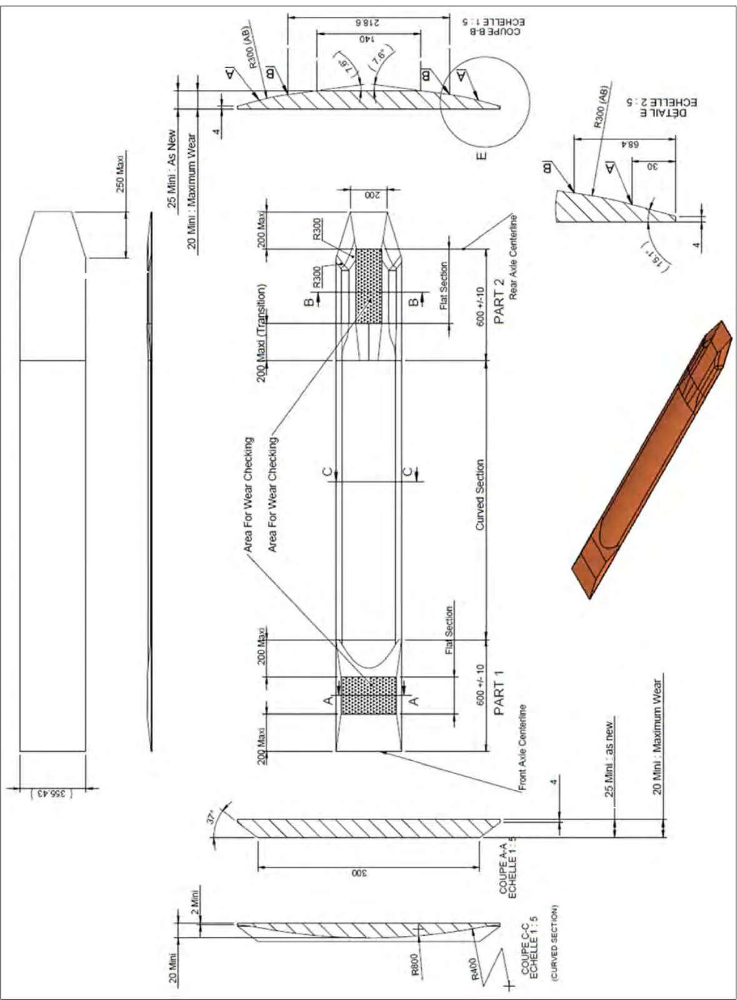
＜図中＞新品、最大磨耗、磨耗検査領域 （移行部）、断面C-C スケール、（湾曲域）、前部車軸中心線、後部車軸中心線、平坦領域、E部詳細
P.81図３テンプレート１

＜図中＞曲線、前後方向中心線Yゼロ、正面
P.82図４テンプレート２＆３


＜図中＞基準面
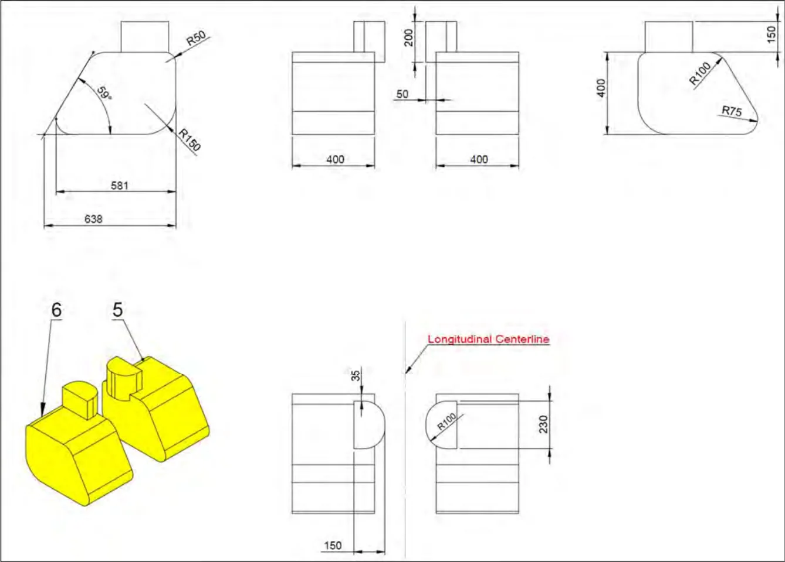
＜図中＞前後方向中心線

＜図中＞断面
P.85図８

＜図中＞後部ロールオーバー構造体の前面
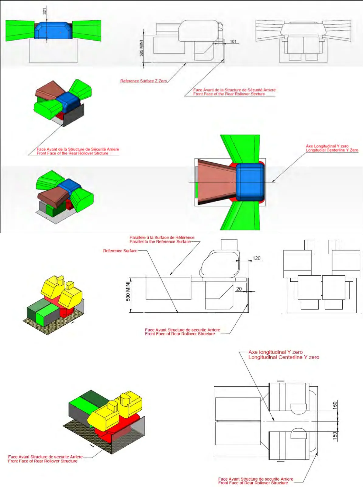
＜図中＞基準面Z ゼロ、後部ロールオーバー構造体の前面、前後方向中心線Y ゼロ、基準面に平行、基準面

P.88図１１

重要な注解－ 次の構造物をコクピット支持体の頂部に搭載することが義務付けられる：ＴＶアンテナ、およびＦＩＡテレメトリーアンテナ－ 当該構造物の上にはその他一切の部品がないこと。－ 構造物との最小距離が１００ｍｍを超える場合のピトー管を除き、構造物の前にはその他一切の部品がないこと。－ 構造体後方のもう１つのアンテナまでの最小距離は５０ｍｍである。－ 次の構造体は車両の最大高の外側となることができる。－ 構造体はカーボンファイバー製でなければならない。－ ＦＩＡテレメトリーアンテナからＦＩＡデータロガーへと行くＦＩＡテレメトリーアンテナ用のＲＦケーブルは１つの部品でなければならない。相互接続は認められない（ＦＩＡデータロガー製造者が供給する帯域通過フィルターを含むものは除く）。－ ＦＩＡテレメトリーアンテナ用のＲＦケーブルの最大長は２ｍ。－ テレメトリーアンテナおよびＧＰＳアンテナ用のＲＦケーブルは、ＦＩＡデータロガー製造者が供給する義務付けられるケーブルでなければならない。－ ＦＩＡデータロガー用のＧＰＳアンテナは、その他一切のアンテナの７００ｍｍ球形範囲の外側でなければならない。－ ＧＰＳ ＦＩＡデータロガーアンテナからＦＩＡデータロガーへと行く、ＧＰＳ ＦＩＡデータロガーアンテナ用のＲＳケーブルは１つの部品でなければならない。相互接続は認められない。
P.89図１２

すべての端部が最大R10 の半径をつけて丸みを帯びることができる。
図１３

＜図中＞ 肩部支持、骨盤支持
P.90図１４
サバイバルセル内のオイルタンク凹み